LF 5 – Chirurgische Versorgungsabläufe & Nervensystemالحقل التعليمي 5 – مسارات الرعاية الجراحية والجهاز العصبي
Alle Unterlagen aus dem Unterricht – übersetzt, erklärt und mit Bildern. Oben rechts umschalten: DE + عربي oder Nur Deutsch.
كل أوراق الدرس – مترجمة ومشروحة ومع الصور. فوق على اليمين بتقدر تبدّل: ألماني + عربي أو ألماني بس.
Behandlungspfadمسار العلاج
Was bedeutet Behandlungspfad?ماذا يعني مسار العلاج؟
„In der modernen Medizin arbeiten viele Berufsgruppen Hand in Hand. Damit alle wissen, was wann zu tun ist, gibt es sogenannte Behandlungspfade. Ein Behandlungspfad ist ein standardisierter, interdisziplinär abgestimmter Ablauf, der beschreibt, wie ein bestimmter Krankheitsfall medizinisch, pflegerisch und therapeutisch versorgt wird."
"في الطب الحديث تعمل فئات مهنية كثيرة يداً بيد. ولكي يعرف الجميع ما يجب فعله ومتى، توجد ما تُسمّى مسارات العلاج. مسار العلاج هو تسلسل موحّد ومنسّق بين التخصصات المختلفة، يصف كيف تتم رعاية حالة مرضية معينة طبياً وتمريضياً وعلاجياً."
Der Begriff des „klinischen Behandlungspfads" ist nicht einheitlich definiert. Behandlungspfade haben sich aus Verfahren im industriellen Projektmanagement entwickelt. Hier wurden in größeren Projekten (z. B. Schiffsbau) sog. Critical Pathways definiert, um Kosten und Zeit nicht aus dem Ruder laufen zu lassen. In diesen Projekten müssen verschiedene Firmen ohne kostspielige Pufferzonen koordiniert werden. Beim Hauptziel einer termingerechten Fertigstellung eines Projekts sollten diese Pfade ein frühzeitiges Erkennen von Verzögerungen in den parallelen Arbeitsschritten ermöglichen. Ein kontinuierlicher Soll-Ist-Vergleich kann Mängel in der Planung rechtzeitig offenlegen.
مصطلح "مسار العلاج السريري" ليس له تعريف موحّد. تطوّرت مسارات العلاج من أساليب إدارة المشاريع الصناعية. ففي المشاريع الكبيرة (مثل بناء السفن) تم تحديد ما يُسمّى المسارات الحرجة (Critical Pathways)، حتى لا تخرج التكاليف والوقت عن السيطرة. في هذه المشاريع يجب تنسيق شركات مختلفة دون مناطق احتياط مكلفة. ومع الهدف الرئيسي وهو إنهاء المشروع في الموعد، كان يجب أن تتيح هذه المسارات اكتشاف التأخيرات مبكراً في خطوات العمل المتوازية. والمقارنة المستمرة بين المخطَّط والواقع (Soll-Ist-Vergleich) تكشف أخطاء التخطيط في الوقت المناسب.
Bei der Implementierung ins Gesundheitssystem wurden aus den Critical Pathways sog. Clinical Pathways.
عند إدخالها في النظام الصحي تحوّلت المسارات الحرجة إلى ما يُسمّى المسارات السريرية (Clinical Pathways).
Anwendungالتطبيق
„Behandlungspfade werden meist für häufige Krankheitsbilder erstellt – zum Beispiel Hüft-TEP, Appendektomie oder akutes Abdomen. Sie werden von den Kliniken selbst erstellt und basieren auf wissenschaftlichen Leitlinien und den Erfahrungen der jeweiligen Klinik. Damit schaffen sie Verlässlichkeit und Transparenz – sowohl für die Mitarbeitenden als auch für die Patientinnen und Patienten.
"تُعَدّ مسارات العلاج غالباً للأمراض الشائعة – مثل استبدال مفصل الورك الكلي (Hüft-TEP)، استئصال الزائدة (Appendektomie) أو البطن الحاد (akutes Abdomen). تضعها المستشفيات بنفسها، وتعتمد على الإرشادات العلمية وخبرات كل مستشفى. وبذلك تخلق الموثوقية والشفافية – للعاملين وللمرضى على حد سواء.
Ein Behandlungspfad umfasst alle einzelnen Behandlungsstationen, die ein Patient von Aufnahme bis Entlassung durchläuft. Alle beteiligten Berufsgruppen einigen sich auf einen Behandlungsablauf. Das Team legt fest, in welcher Reihenfolge wer was bis wann und mit welchem Ziel (Ergebnis) erledigen sollte.
يشمل مسار العلاج كل محطات العلاج التي يمر بها المريض من الاستقبال حتى الخروج. تتفق جميع الفئات المهنية المشاركة على تسلسل علاج واحد. ويحدد الفريق بأي ترتيب، من يفعل ماذا، حتى متى، وبأي هدف (نتيجة)."
Zieleالأهداف
- Qualität und Sicherheit der Versorgungجودة وسلامة الرعاية
- einheitliche Abläufe (z. B. bei Operationen)إجراءات موحدة (مثلاً في العمليات)
- klare Aufgabenverteilungتوزيع واضح للمهام
- Vermeidung von Informationsverlustenتجنّب ضياع المعلومات
Um den Behandlungspfad möglichst zweckmäßig und verständlich zu gestalten, sollte bei der Erstellung darauf geachtet werden, möglichst alle Beteiligten einzubeziehen und abzubilden. Das Ziel sollte sein, eine transparente Darstellung von Behandlungen und Maßnahmen an einem Patienten zu generieren, um die Planbarkeit eines Behandlungsprozesses sicherzustellen. Weiterhin soll der Behandlungspfad einer einfachen, einheitlichen Dokumentation dienlich sein. Wichtig ist, dass er für alle nutzbar ist. Die doppelte oder gar unnütze Dokumentation soll damit vermieden werden. Eine visuelle Darstellung des Prozesspfades hilft zudem bei der Optimierung von Prozessen. Einheitliche Arbeitsschritte, die Sicherstellung von Schnittstellenzusammenarbeit und die Vorgabe von Standards helfen bei der Minimierung von Risiken während des Behandlungsprozesses. Außerdem unterstützt dieses Dokumentations- und Steuerungsinstrument durch die übersichtliche Darstellung die Reduktion von Kosten und Verweildauer.
لكي يكون مسار العلاج عملياً ومفهوماً قدر الإمكان، يجب عند إعداده إشراك جميع المعنيين وتمثيلهم. الهدف هو عرض واضح للعلاجات والإجراءات المطبقة على المريض، لضمان إمكانية تخطيط عملية العلاج. كما يجب أن يخدم المسار توثيقاً بسيطاً وموحداً. المهم أن يكون قابلاً للاستخدام من الجميع، وبذلك يتم تجنّب التوثيق المكرر أو غير المفيد. والعرض المرئي لمسار العملية يساعد أيضاً في تحسين الإجراءات. خطوات العمل الموحدة، وضمان التعاون بين الأقسام (Schnittstellen)، ووضع المعايير، تساعد على تقليل المخاطر خلال عملية العلاج. إضافة لذلك تدعم هذه الأداة، بعرضها الواضح، تقليل التكاليف ومدة الإقامة في المستشفى (Verweildauer).
Warum sind Behandlungspfade in der Chirurgie so wichtig?لماذا مسارات العلاج مهمة جداً في الجراحة؟
Gerade in der Chirurgie müssen Abläufe schnell, präzise und sicher funktionieren. Der Weg vom Notfall bis zur Operation und Nachsorge ist komplex. Wenn an irgendeiner Stelle Informationen verloren gehen, kann das ernsthafte Folgen haben.
في الجراحة بالذات يجب أن تعمل الإجراءات بسرعة ودقة وأمان. الطريق من الطوارئ حتى العملية والمتابعة معقد. وإذا ضاعت معلومات في أي نقطة، قد تكون العواقب خطيرة.
Beispielhafter Behandlungspfad: Akutes Abdomenمثال: مسار علاج البطن الحاد
- Aufnahme / Ersteinschätzung (Notaufnahme)الاستقبال / التقييم الأولي (الطوارئ)
- Diagnostik (Labor, Bildgebung)التشخيص (مختبر، تصوير)
- Präoperative Vorbereitungالتحضير قبل العملية
- Operationالعملية
- Postoperative Phase (Überwachung, Pflege)مرحلة ما بعد العملية (مراقبة، تمريض)
- Entlassung / Nachsorgeالخروج / المتابعة
Dieser Ablauf beschreibt den sogenannten Gesamtprozess. Innerhalb jedes Abschnitts gibt es wiederum Unterprozesse – z. B. präoperative Pflege, OP-Vorbereitung, postoperative Überwachung. Für uns in der Pflege bedeutet das: Wir müssen wissen, an welcher Stelle im Behandlungspfad wir uns befinden und welche pflegerischen Aufgaben in dieser Phase wichtig sind."
هذا التسلسل يصف ما يُسمّى العملية الكاملة. وداخل كل مرحلة توجد عمليات فرعية – مثل التمريض قبل العملية، تحضير العملية، المراقبة بعد العملية. بالنسبة لنا في التمريض يعني ذلك: يجب أن نعرف في أي نقطة من مسار العلاج نحن، وما هي المهام التمريضية المهمة في هذه المرحلة."
Exemplarischer Behandlungspfad: Hüfttotalendoprothesenimplantationمثال: مسار علاج زراعة مفصل الورك الكلي
OP-Tagيوم العملية
- Am Vorabend sowie morgens vor der OP Duschen mit antiseptischer Lösung, Einbringen von Nasensalbe, Trinken klarer Flüssigkeit bis 2 h vor OP möglichفي المساء السابق وصباح العملية: استحمام بمحلول مطهّر، وضع مرهم أنفي، شرب السوائل الصافية ممكن حتى ساعتين قبل العملية
- OP-Einleitung durch Anästhesieabteilung, Gabe der AB (Antibiotika)-Prophylaxe sowie TXA (wirkt als Antifibrinolytikum, indem es die körpereigene Auflösung von Blutgerinnseln (Fibrinolyse) hemmt) – 30–60 minبدء التخدير من قسم التخدير، إعطاء مضاد حيوي وقائي و TXA (يعمل كمضاد لانحلال الفيبرين، بمنعه الجسم من تذويب الجلطات) – 30–60 دقيقة
- Operation – 60–90 minالعملية – 60–90 دقيقة
- Aufwachraum: Überwachung der postoperativen Phase durch die Anästhesieabteilung, Trinken ist möglich, ggf. Wassereis – 60–90 minغرفة الإفاقة: مراقبة ما بعد العملية من قسم التخدير، الشرب ممكن، وإذا لزم ثلج مائي – 60–90 دقيقة
- Zurück auf der Station: Erste Mobilisation aus dem Bett durch Physiotherapie und zur Toilette durch Pflege, Essen ist frühzeitig möglichالعودة للقسم: أول تحريك من السرير عبر العلاج الطبيعي، وإلى الحمام عبر التمريض، والأكل ممكن مبكراً
Postoperative Tageالأيام بعد العملية
| Bereich (wer, wann)المجال (مين، متى) | 1. postoperativer Tagاليوم الأول | 2.–4. postoperativer Tagاليوم 2–4 |
|---|---|---|
| Visite – Operateur, Stationsarzt, Pflege · 07:00–08:00الزيارة الطبية | Stationsvisite am Patientenbettزيارة عند سرير المريض | Stationsvisite am Patientenbett; 5.–6. Tag: Überleitung in AHB nach Erreichen der Entlasskriterien möglichزيارة عند السرير؛ يوم 5–6: تحويل لإعادة التأهيل (AHB) بعد تحقيق معايير الخروج |
| Untersuchung – Pflege · 07:30–08:30الفحص | Laborkontrolle (kl. BB, E-Lyte, CRP)فحص مختبر (تعداد دم صغير، أملاح، CRP) | Laborkontrolle bei Bedarfفحص مختبر عند الحاجة |
| Körperpflege, Mobilität – Pflege, Pflegeschüler/-in · 08:30–10:00العناية الجسدية والحركة | Mobilisation am hohen Gehwagen, Wechsel auf UAGs; Körperpflege ggf. noch im Bett bzw. im Bad mit Unterstützungتحريك بالمشاية العالية ثم عكازات الساعد؛ العناية في السرير أو بالحمام بمساعدة | Mobilisation an UAGs, Mobilisation zum Bad, zunehmend selbständige Körperpflegeتحريك بالعكازات، المشي للحمام، عناية ذاتية متزايدة |
| Physiotherapie – Physio-, Ergotherapie · 09:00–12:00العلاج الطبيعي | Atemtherapie, durchblutungsfördernde Übungen; Information zu Verhaltensweisen und Hilfsmittelbestellung; Gangschule auf Zimmerebene; Anleitung zu Eigenübungen im Bettعلاج تنفسي، تمارين للدورة الدموية؛ معلومات عن السلوك وطلب الوسائل المساعدة؛ تدريب مشي داخل الغرفة؛ تمارين ذاتية بالسرير | Gelenkmobilisation und Muskelkräftigung im Bett; Anleitung zur Selbständigkeit: Gebrauch der Hilfsmittel, Lagewechsel, Gehen mit Stützen etc.; Gangschule außerhalb des Zimmers, Treppensteigen, ggf. „Trainings-Parcours"تحريك المفصل وتقوية العضلات؛ إرشاد للاستقلالية: الوسائل المساعدة، تغيير الوضعية، المشي بالعكازات؛ مشي خارج الغرفة، صعود الدرج، "مسار تدريبي" |
| Schmerzmanagement, Schmerzabfrage, Bedarfsmedikation – Pflege · 3× tgl.إدارة الألم | Schmerzabfrage anhand VAS (Visuelle Analogskala); ggf. Anpassen der Medikationسؤال الألم بمقياس VAS؛ تعديل الأدوية عند اللزوم | Schmerzabfrage anhand VAS; ggf. Anpassen der Medikationنفس الشيء |
| Wundmanagement – Stationsarzt · 07:00–08:00إدارة الجرح | Wundkontrolle durch das Wabenpflaster; ggf. Drainagezug (falls verwendet)فحص الجرح عبر اللاصق الشبكي؛ سحب الدرنقة إن وُجدت | Wundkontrolle durch das Wabenpflasterفحص الجرح عبر اللاصق الشبكي |
| Thromboseprophylaxe, blutgerinnungshemmende Injektion – Pflege · 18:00الوقاية من الجلطات | Verabreichung durch die Pflegekraft; Einweisung in die selbständige Durchführungإعطاؤها من الممرض؛ تعليم المريض إعطاءها بنفسه | Verabreichung durch die Pflegekraft; erneute Einweisung in die selbständige Durchführungإعطاؤها من الممرض؛ تعليم متكرر |
Wofür wird ein Behandlungspfad verwendet?لشو يُستخدم مسار العلاج؟
Ein Behandlungspfad wird verwendet, damit alle Berufsgruppen (Ärzte, Pflege, Physiotherapie, Anästhesie) nach demselben Plan arbeiten. Er legt fest, wer was wann macht – von der Aufnahme bis zur Entlassung. So werden Fehler und Informationsverluste vermieden, die Qualität und Sicherheit steigen, die Dokumentation wird einfacher, und Kosten sowie Verweildauer sinken. Für die Pflege ist er eine Orientierung: Man weiß immer, in welcher Phase der Patient ist und welche pflegerischen Aufgaben jetzt wichtig sind.
يُستخدم مسار العلاج حتى تعمل كل الفئات المهنية (أطباء، تمريض، علاج طبيعي، تخدير) حسب نفس الخطة. هو يحدد مين بيعمل شو ومتى – من الاستقبال حتى الخروج. وبهيك بنتجنب الأخطاء وضياع المعلومات، بترتفع الجودة والأمان، بيصير التوثيق أسهل، وبتقل التكاليف ومدة الإقامة. وبالنسبة للتمريض هو دليل: دايماً بتعرف المريض بأي مرحلة، وشو المهام التمريضية المهمة هلأ.
Original-Arbeitsblatt (Scan) (5)ورقة العمل الأصلية


Unterrichtsfolien: Chirurgische Versorgungsabläufeشرائح الدرس: مسارات الرعاية الجراحية
1. Impulsfrageسؤال تمهيدي
Lösungالحل
Aufnahme → Diagnostik → Operationsvorbereitung → Operation → Postoperative Pflege → Entlassung
الاستقبال ← التشخيص ← تحضير العملية ← العملية ← التمريض بعد العملية ← الخروج
2. Fallbeispiel Herr M.حالة السيد M
„Stellt euch bitte einmal vor, auf der chirurgischen Station wird ein Patient eingeliefert – Herr M., 54 Jahre, starke Bauchschmerzen, blass, kaltschweißig. Die Notaufnahme ruft an: ‚Akutes Abdomen, kommt gleich hoch!'"
"تخيلوا أن مريضاً يُنقل إلى قسم الجراحة – السيد M، 54 سنة، آلام بطن شديدة، شاحب، عرق بارد. الطوارئ تتصل: 'بطن حاد، طالع هلأ!'"
- Was ist euer erster Gedanke, wenn ihr den Begriff „akutes Abdomen" hört?ما أول فكرة لديكم عند سماع "بطن حاد"؟
- Was passiert jetzt bei euch auf Station?ماذا يحدث الآن عندكم في القسم؟
- Welche Schritte folgen nacheinander?ما الخطوات التي تتبع بالترتيب؟
- Wer ist alles beteiligt, bis der Patient operiert wird?من المشارك حتى تُجرى العملية للمريض؟
- Welche Aufgabe hat die Pflege in solch einer Situation?ما دور التمريض في مثل هذا الموقف؟
3. Definition Behandlungspfadتعريف مسار العلاج
„In der modernen Medizin arbeiten viele Berufsgruppen Hand in Hand. Damit alle wissen, was wann zu tun ist, gibt es sogenannte Behandlungspfade. Ein Behandlungspfad ist ein standardisierter, interdisziplinär abgestimmter Ablauf, der beschreibt, wie ein bestimmter Krankheitsfall medizinisch, pflegerisch und therapeutisch versorgt wird."
"في الطب الحديث تعمل فئات مهنية كثيرة يداً بيد... مسار العلاج هو تسلسل موحّد ومنسّق بين التخصصات، يصف كيف تتم رعاية حالة مرضية معينة طبياً وتمريضياً وعلاجياً."
4. Rolle der Pflege im Behandlungspfadدور التمريض في مسار العلاج
„Pflegekräfte sind in allen Phasen beteiligt – von der Aufnahme bis zur Entlassung. Unsere Aufgaben unterscheiden sich je nach Phase, aber sie sind immer entscheidend für den Verlauf."
"الممرضون مشاركون في كل المراحل – من الاستقبال حتى الخروج. مهامنا تختلف حسب المرحلة، لكنها دائماً حاسمة لمسار العلاج."
| Phaseالمرحلة | Pflegerische Aufgabenالمهام التمريضية |
|---|---|
| Aufnahmeالاستقبال | Pflegeanamnese, Vitalzeichen, Schmerzeinschätzung, Information geben, Dokumentation, Vorbereitungالسيرة التمريضية، العلامات الحيوية، تقييم الألم، إعطاء المعلومات، التوثيق، التحضير |
| Präoperative Vorbereitungالتحضير قبل العملية | Nüchternheit prüfen, Hautvorbereitung, Begleitung zur OP, Schmuck ablegenالتأكد من الصيام، تحضير الجلد، مرافقة المريض للعملية، نزع المجوهرات |
| Operationالعملية | Übergabe an OP-Team, SBAR, Dokumentationالتسليم لفريق العمليات، SBAR، التوثيق |
| Postoperativبعد العملية | Überwachung, Schmerzmanagement, Wundkontrolle, Mobilisationالمراقبة، إدارة الألم، فحص الجرح، التحريك |
| Entlassungالخروج | Beratung, Wundpflege erklären, Entlassbrief, Entlassungsmanagementالاستشارة، شرح العناية بالجرح، رسالة الخروج، إدارة الخروج |
5. Zentraler Aspektالنقطة الأساسية
6. Aufgabenالمهام
- Bearbeiten Sie das Arbeitsblatt „Herr M. – akutes Abdomen"حل ورقة العمل "السيد M – بطن حاد"
- Gruppenarbeit: Bilden Sie 6 Gruppen und bearbeiten Sie das Ihnen zugewiesene Themaعمل جماعي: كوّنوا 6 مجموعات واشتغلوا على الموضوع المخصص لكم
Original-Folien (Ausdruck) (6)الشرائح الأصلية


Fallbeispiel: Herr M. – akutes Abdomenحالة: السيد M – البطن الحاد
Herr M., 54 Jahre, wurde mit starken Bauchschmerzen in die chirurgische Notaufnahme gebracht. Die erste Untersuchung ergibt: gespannter, druckschmerzhafter Bauch, Fieber 38,5 °C, Puls 110/min, Blutdruck 95/60 mmHg.
السيد M، 54 سنة، أُحضر إلى طوارئ الجراحة بآلام بطن شديدة. الفحص الأول يُظهر: بطن مشدود ومؤلم عند الضغط، حرارة 38.5، نبض 110/دقيقة، ضغط دم 95/60.
Die Ärztin stellt den Verdacht auf ein akutes Abdomen. Es folgen Laboruntersuchungen, eine Sonografie und ein CT des Abdomens. Nach der Bildgebung steht fest: Verdacht auf perforierte Appendizitis. Herr M. wird umgehend auf die chirurgische Station aufgenommen und für die Operation vorbereitet.
تشتبه الطبيبة ببطن حاد. تتبعها فحوصات مختبر، تصوير بالموجات فوق الصوتية (سونار)، وتصوير طبقي (CT) للبطن. بعد التصوير يتأكد: اشتباه بالتهاب زائدة دودية مثقوبة. يُنقل السيد M فوراً إلى قسم الجراحة ويُحضَّر للعملية.

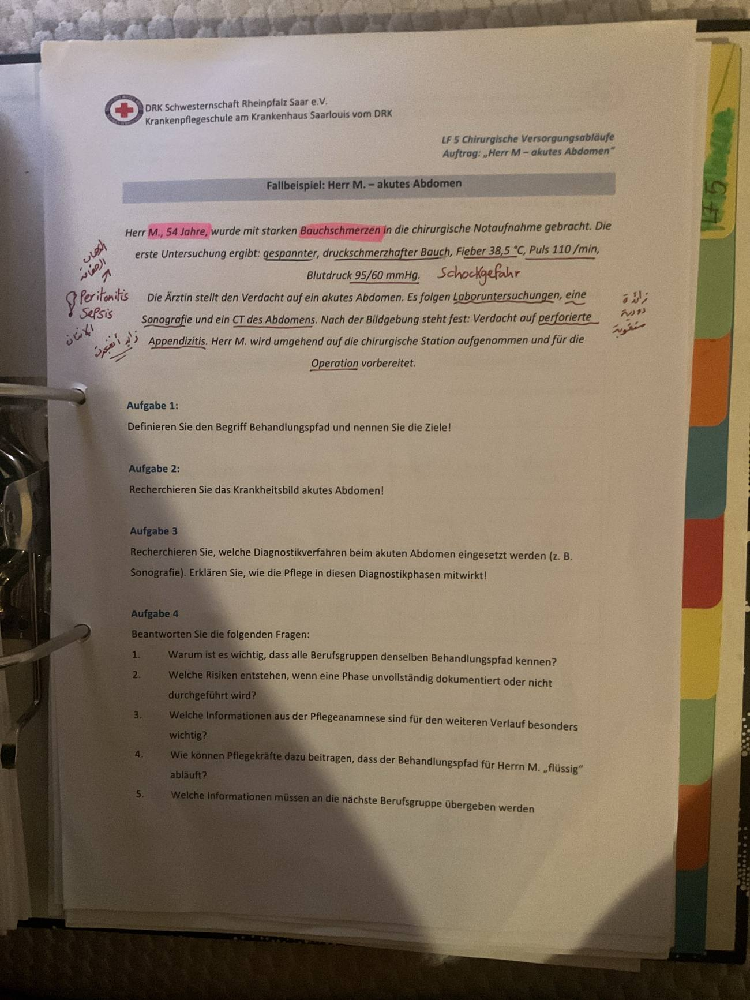
Deine Notizen zum Fallملاحظاتك على الحالة
- Puls 110 + RR 95/60 → Schockgefahrخطر صدمة
- Perforierte Appendizitis → Blinddarmdurchbruchانفجار الزائدة
- Peritonitis: ist eine Entzündung des Bauchfells, die meistens durch eine Infektion entstehtالتهاب الصفاق (غشاء البطن)، غالباً بسبب عدوى
- Sepsis: ist eine lebensbedrohliche Organdysfunktion, die durch eine irreguläre Antwort des Körpers auf eine Infektion verursacht wirdخلل مهدد للحياة في وظائف الأعضاء، سببه ردّ فعل غير طبيعي من الجسم على عدوى (تسمم الدم)
Aufgabe 1المهمة 1
Ist ein standardisierter, interdisziplinär abgestimmter Ablauf, der beschreibt, wie ein bestimmter Krankheitsfall medizinisch, pflegerisch und therapeutisch versorgt wird.
هو تسلسل موحّد ومنسّق بين التخصصات، يصف كيف تتم رعاية حالة مرضية معينة طبياً وتمريضياً وعلاجياً.
Zieleالأهداف
- Qualität und Sicherheit der Versorgungجودة وسلامة الرعاية
- Einheitliche Abläufeإجراءات موحدة
- Klare Aufgabenverteilungتوزيع واضح للمهام
- Vermeidung von Informationsverlustenتجنب ضياع المعلومات

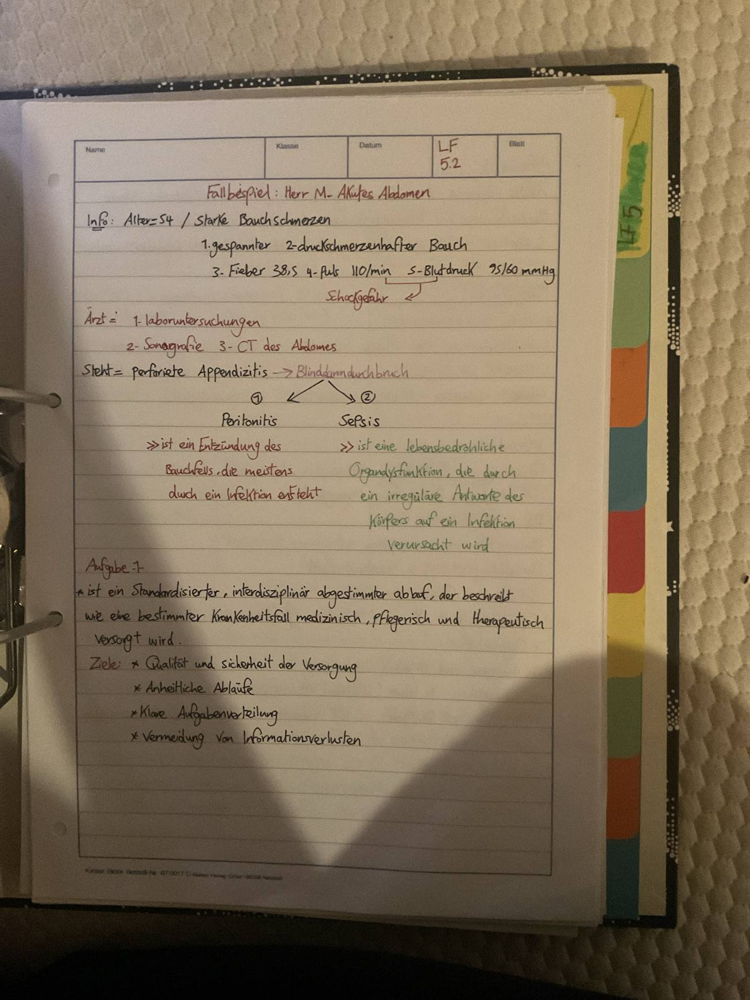
Aufgabe 2المهمة 2
Akutes Abdomen ist ein Sammelbegriff für plötzlich auftretende, starke Bauchschmerzen mit lebensbedrohlichem Charakter. Es ist keine Diagnose, sondern ein Notfall, der sofort abgeklärt und oft operativ behandelt werden muss.
البطن الحاد مصطلح جامع لآلام بطن شديدة ومفاجئة ذات طابع مهدد للحياة. هو ليس تشخيصاً، بل حالة طوارئ يجب توضيحها فوراً، وغالباً تُعالج جراحياً.
| Leitsymptomeالأعراض الرئيسية | Weitere Symptomeأعراض أخرى |
|---|---|
| 1. Starke Bauchschmerzenآلام بطن شديدة | 1. Fieberحرارة |
| 2. Abwehrspannung (brettharter Abdomen)تشنّج دفاعي (بطن صلب كاللوح) | 2. Kreislaufstörung bis Schock: Tachykardie, Hypotonie, Blässe, Kaltschweißigkeitاضطراب الدورة الدموية حتى الصدمة: تسرّع القلب، هبوط الضغط، شحوب، عرق بارد |
| 3. Gestörte Darmtätigkeit: Übelkeit, Erbrechen, Stuhl- und Windverhaltاضطراب حركة الأمعاء: غثيان، إقياء، احتباس البراز والغازات |
Ursachenالأسباب
| Ursacheالسبب | Beispieleأمثلة |
|---|---|
| Entzündungالتهاب | Pankreatitis, Appendizitis, Cholezystitis, Divertikulitisالتهاب البنكرياس، الزائدة، المرارة، الرتوج |
| Perforationانثقاب | perforiertes Magengeschwür, perforierte Appendizitisقرحة معدة مثقوبة، زائدة مثقوبة |
| Ileusانسداد | Darmverschlussانسداد الأمعاء |
| Blutungنزيف | Aortenaneurysmaتمدد الأبهر |
| Durchblutungsstörungنقص التروية | Mesenterialinfarktاحتشاء المساريقا |
| Kolikenمغص | Gallenkolik, Nierenkolikمغص مراري، مغص كلوي |
| Gynäkologischنسائي | Extrauteringravidität (z. B. im Eileiter)حمل خارج الرحم (مثلاً في قناة فالوب) |
Diagnostikالتشخيص
- Anamnese und körperliche Untersuchungالسيرة المرضية والفحص الجسدي
- Vitalzeichenالعلامات الحيوية
- Labor (Blutbild, CRP, Leukozyten, Lipase, Laktat)مختبر (تعداد دم، CRP، كريات بيضاء، ليباز، لاكتات)
- Sonografieسونار
- Röntgenأشعة
- CT Abdomenطبقي للبطن
- EKG (Herzinfarkt ausschließen)تخطيط قلب (لاستبعاد الجلطة القلبية)

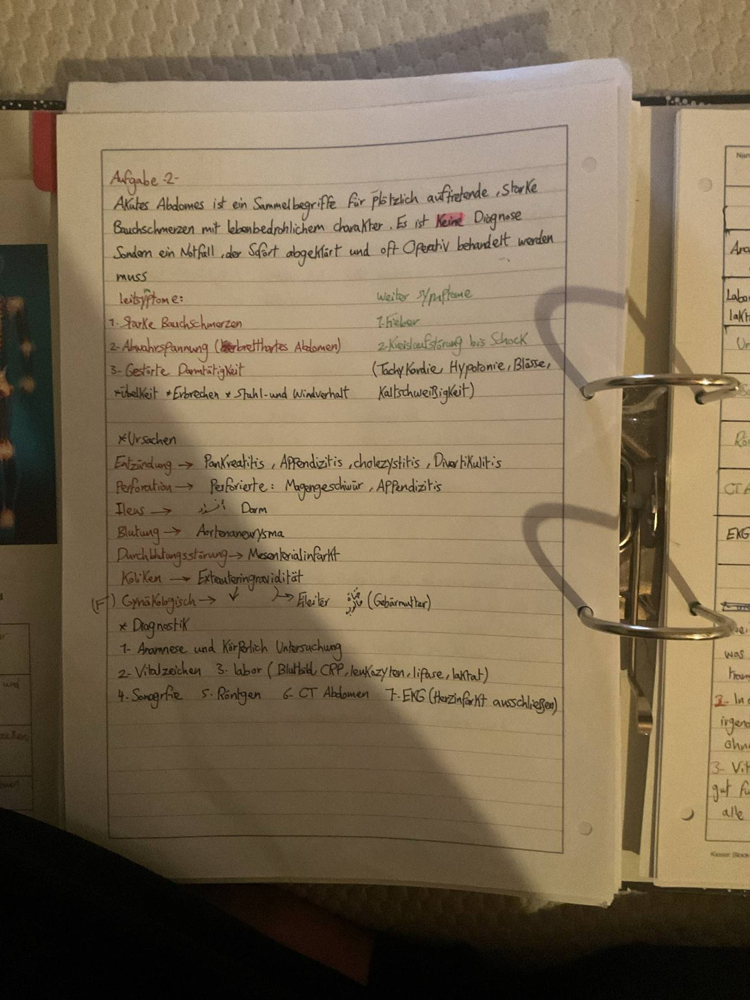
Aufgabe 3المهمة 3
| Verfahrenالطريقة | Zweckالهدف | Aufgaben der Pflegeمهام التمريض |
|---|---|---|
| Anamnese und körperliche Untersuchungالسيرة والفحص الجسدي | Schmerzort, Abwehrspannungمكان الألم، التشنج الدفاعي | Pflegeanamnese, Vitalzeichen, Schmerzskala, Patienten lagernسيرة تمريضية، علامات حيوية، مقياس ألم، وضعية المريض |
| Labor (BB, CRP, Lipase, Laktat, Gerinnung)مختبر | Entzündung, Blutung, OP-Vorbereitungالتهاب، نزيف، تحضير للعملية | Blutentnahme vorbereiten und durchführen, Röhrchen beschriften, zügig ins Labor schickenتحضير سحب الدم وتنفيذه، تسمية الأنابيب، إرسالها بسرعة للمختبر |
| Urinuntersuchungفحص البول | Harnwegsinfekt / Nierenstein ausschließenاستبعاد التهاب المسالك / حصى الكلى | Urinprobe gewinnen, ggf. Schwangerschaftstest bei Frauenأخذ عينة بول، وعند النساء اختبار حمل إذا لزم |
| Sonografieسونار | freie Flüssigkeit, Appendix, Gallenblaseسوائل حرة، الزائدة، المرارة | Patienten informieren, Oberkörper frei machen, ggf. nüchtern lassenإعلام المريض، كشف الجزء العلوي، إبقاؤه صائماً إذا لزم |
| Röntgen Abdomenأشعة البطن | freie Luft (Perforation), Spiegel (Ileus)هواء حر (انثقاب)، مستويات سائلة (انسداد) | Transport, Schmuck/Metall ablegenالنقل، نزع المجوهرات/المعادن |
| CT Abdomen (mit Kontrastmittel)طبقي للبطن مع مادة تباين | genaue Diagnoseتشخيص دقيق | Allergien und Nierenwerte erfragen, venösen Zugang vorbereiten, nüchtern lassen, begleiten und überwachenالسؤال عن الحساسية ووظائف الكلى، تحضير خط وريدي، صيام، مرافقة ومراقبة |
| EKGتخطيط القلب | Herzinfarkt ausschließenاستبعاد الجلطة القلبية | Elektroden anlegen, EKG schreibenتركيب الأقطاب، إجراء التخطيط |
Aufgabe 4 – Fragenالمهمة 4 – الأسئلة
Weil viele Berufsgruppen Hand in Hand arbeiten. Damit alle wissen, was wann zu tun ist. Der Behandlungspfad schafft Verlässlichkeit, Transparenz und eine klare Aufgabenverteilung.
لأن فئات مهنية كثيرة تعمل يداً بيد، وحتى يعرف الجميع ما يجب فعله ومتى. مسار العلاج يخلق الموثوقية والشفافية وتوزيعاً واضحاً للمهام.
In der Chirurgie ist der Weg vom Notfall bis zur Operation komplex. Wenn an irgendeiner Stelle Informationen verloren gehen, kann das ernsthafte Folgen haben. Ohne Soll-Ist-Vergleich werden Mängel nicht rechtzeitig erkannt.
في الجراحة الطريق من الطوارئ حتى العملية معقد. إذا ضاعت معلومات في أي نقطة قد تكون العواقب خطيرة. وبدون مقارنة المخطط بالواقع لا تُكتشف الأخطاء في الوقت المناسب.
Vitalzeichen, Schmerzbeurteilung, Pflegeanamnese. Damit Pflege gut funktioniert, brauchen wir gute Informationen. Die Pflegeanamnese liefert die Basis für alle weiteren Schritte.
العلامات الحيوية، تقييم الألم، السيرة التمريضية. لكي يعمل التمريض جيداً نحتاج معلومات جيدة. السيرة التمريضية هي الأساس لكل الخطوات التالية.
Wir müssen wissen, an welcher Stelle im Behandlungspfad wir uns befinden und welche pflegerischen Aufgaben in dieser Phase wichtig sind. Dazu gehören einheitliche Arbeitsschritte, Zusammenarbeit an den Schnittstellen und Standards.
يجب أن نعرف في أي نقطة من المسار نحن، وما المهام التمريضية المهمة في هذه المرحلة. ويشمل ذلك خطوات عمل موحدة، والتعاون بين الأقسام، والالتزام بالمعايير.
Übergabe an das OP-Team mit SBAR und Dokumentation.
التسليم لفريق العمليات بطريقة SBAR مع التوثيق.
- Situation – aktuelle Lageالوضع الحالي
- Background – Hintergrundالخلفية
- Assessment – Einschätzungالتقييم
- Recommendation – Empfehlungالتوصية

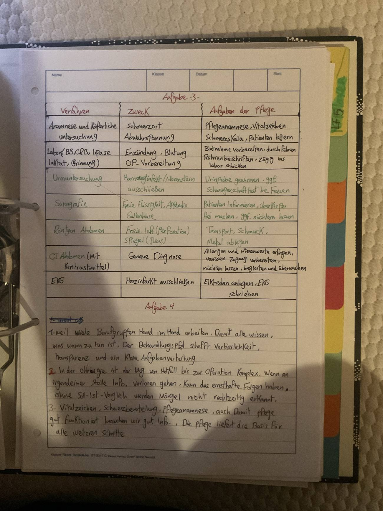

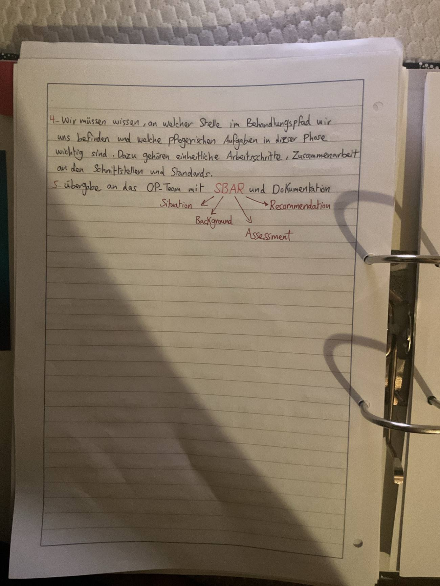
Aufgabe 4 – Tabelleالمهمة 4 – الجدول
| Ablauf / Handlungsschrittالخطوة | Beteiligte Berufsgruppenالمشاركون |
|---|---|
| Aufnahme in der Notaufnahmeالاستقبال في الطوارئ | Pflege, Ärztinتمريض، طبيبة |
| Diagnostik (Labor, Bildgebung)التشخيص | Ärztin, Pflege, Labor, Radiologieطبيبة، تمريض، مختبر، أشعة |
| Aufnahme auf Stationالدخول للقسم | Pflege, Stationsarztتمريض، طبيب القسم |
| Präoperative Vorbereitungالتحضير قبل العملية | Pflege, Chirurg, Anästhesieتمريض، جرّاح، تخدير |
| Operationالعملية | OP-Team, Anästhesieفريق العمليات، تخدير |
| Postoperative Pflege auf Stationالتمريض بعد العملية | Pflege, Stationsarzt, Physiotherapieتمريض، طبيب القسم، علاج طبيعي |
| Entlassung / Nachsorgeالخروج / المتابعة | Arzt, Pflege, Sozialdienstطبيب، تمريض، خدمة اجتماعية |

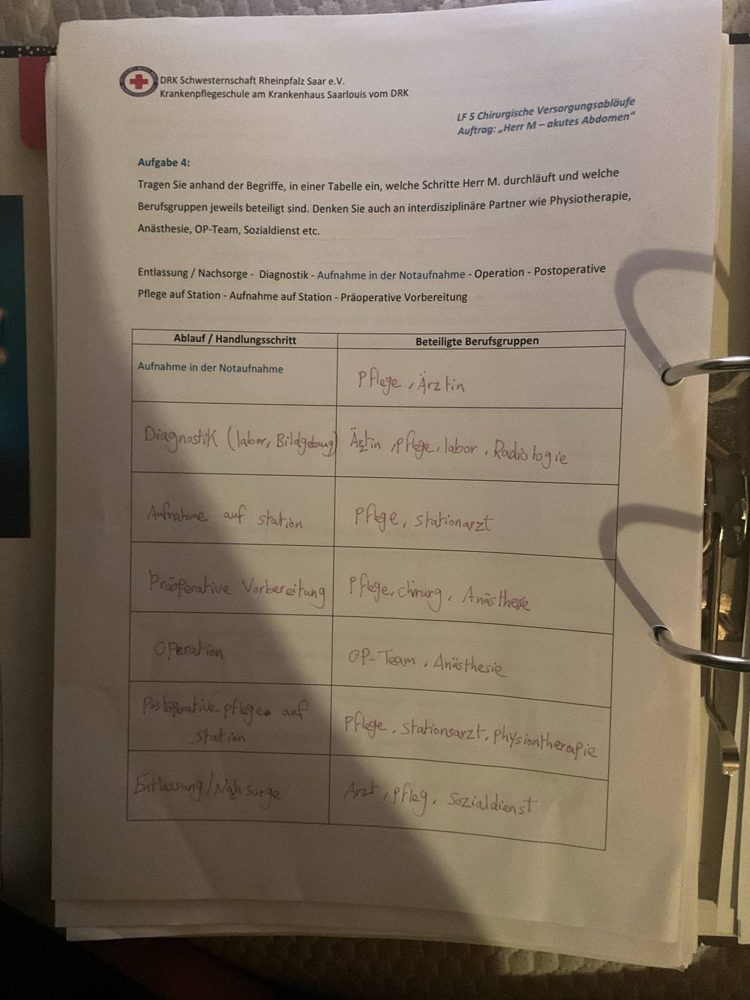
Aufgabe 5المهمة 5
| Phaseالمرحلة | Beispielhafte pflegerische Aufgabenمهام تمريضية | Bedeutung für Patientensicherheitالأهمية لسلامة المريض |
|---|---|---|
| 1. Aufnahme / Ersteinschätzungالاستقبال / التقييم الأولي | Pflegeanamnese, Vitalzeichen, Schmerzbeurteilung, Info geben, Dokumentation, Vorbereitungسيرة تمريضية، علامات حيوية، تقييم ألم، معلومات، توثيق، تحضير | Klare Informationen als Basis für alle weiteren Schritteمعلومات واضحة كأساس لكل الخطوات |
| 2. Präoperative Phaseقبل العملية | Nüchternheit prüfen, Hautvorbereitung, Begleitung zur OP, Schmuck ablegenالتأكد من الصيام، تحضير الجلد، المرافقة، نزع المجوهرات | Sichere Narkose und OPتخدير وعملية آمنة |
| 3. Intraoperative Phaseأثناء العملية | Übergabe an OP-Team, SBAR, Dokumentationالتسليم، SBAR، توثيق | Kein Informationsverlustلا ضياع للمعلومات |
| 4. Postoperative Phaseبعد العملية | Überwachung, Schmerzmanagement, Wundkontrolle, Mobilisationمراقبة، إدارة الألم، فحص الجرح، تحريك | Komplikationen früh erkennenاكتشاف المضاعفات مبكراً |
| 5. Entlassung / Nachsorgeالخروج / المتابعة | Beratung, Nachsorgetermine, Wundpflege erklären, Entlassbrief, Entlassmanagementاستشارة، مواعيد متابعة، شرح العناية بالجرح، رسالة الخروج، إدارة الخروج | Medikamentenplan erklären, sichere Versorgung zu Hause (selbständig)شرح خطة الأدوية، رعاية آمنة في البيت (باستقلالية) |

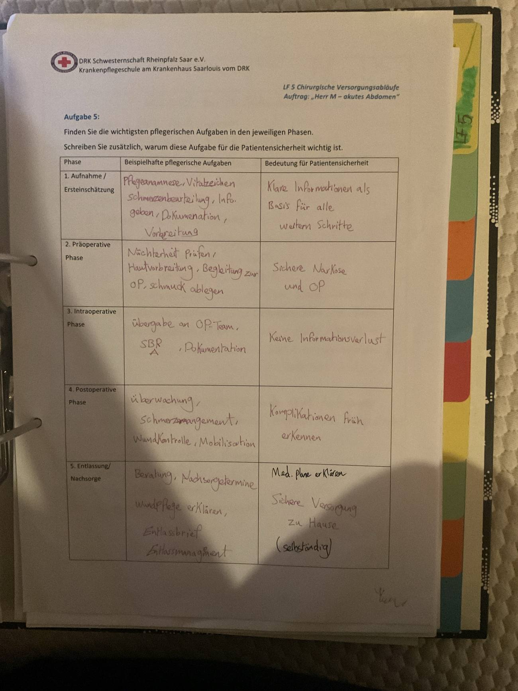
Gruppenarbeit zu verschiedenen Krankheitsbildernعمل جماعي حول صور مرضية مختلفة
- Bilden Sie 6 Gruppenكوّنوا 6 مجموعات
- Beschreiben Sie den typischen Ablauf einer chirurgischen Versorgung in Form eines Behandlungspfades!صِفوا التسلسل النموذجي للرعاية الجراحية على شكل مسار علاج!
Die Themenالمواضيع
| Gruppeالمجموعة | Themaالموضوع |
|---|---|
| Gruppe 1 | Cholezystektomieاستئصال المرارة |
| Gruppe 2 | Hüft-TEPاستبدال مفصل الورك الكلي |
| Gruppe 3 | Frakturversorgungعلاج الكسور |
| Gruppe 4 | Hernien-OPعملية الفتق |
| Gruppe 5 | Appendektomieاستئصال الزائدة الدودية |
| Gruppe 6 | Chirurgisches Débridementالتنظيف الجراحي للجرح (إزالة الأنسجة الميتة) |
Arbeitsauftragالمهمة
Erstellen Sie zu Ihrem Thema eine Übersicht (Plakat oder digital):
اعملوا لموضوعكم ملخصاً (ملصق أو رقمي):
- Beschreibung des Krankheitsbildes / Indikation / Pathophysiologie usw.وصف المرض / دواعي العملية / الفيزيولوجيا المرضية إلخ
- Aufnahmeالاستقبال
- Diagnostikالتشخيص
- Präoperative Pflegeالتمريض قبل العملية
- Operationالعملية
- Postoperative Pflegeالتمريض بعد العملية
- Besonderheiten / Komplikationenخصوصيات / مضاعفات
- Entlassungالخروج
Präsentation der Ergebnisseعرض النتائج
Ziel: Vertiefung der gelernten Inhalte und Förderung der Fachkommunikation.
الهدف: تعميق المحتوى المُتعلَّم وتعزيز التواصل المهني.
One Minute Wonder
Erstellen Sie zu Ihrem Thema ein One Minute Wonder mit den wichtigsten Informationen auf einen Blick.
اعملوا لموضوعكم "One Minute Wonder" – ورقة واحدة فيها أهم المعلومات بنظرة سريعة (بتنقرأ بدقيقة).

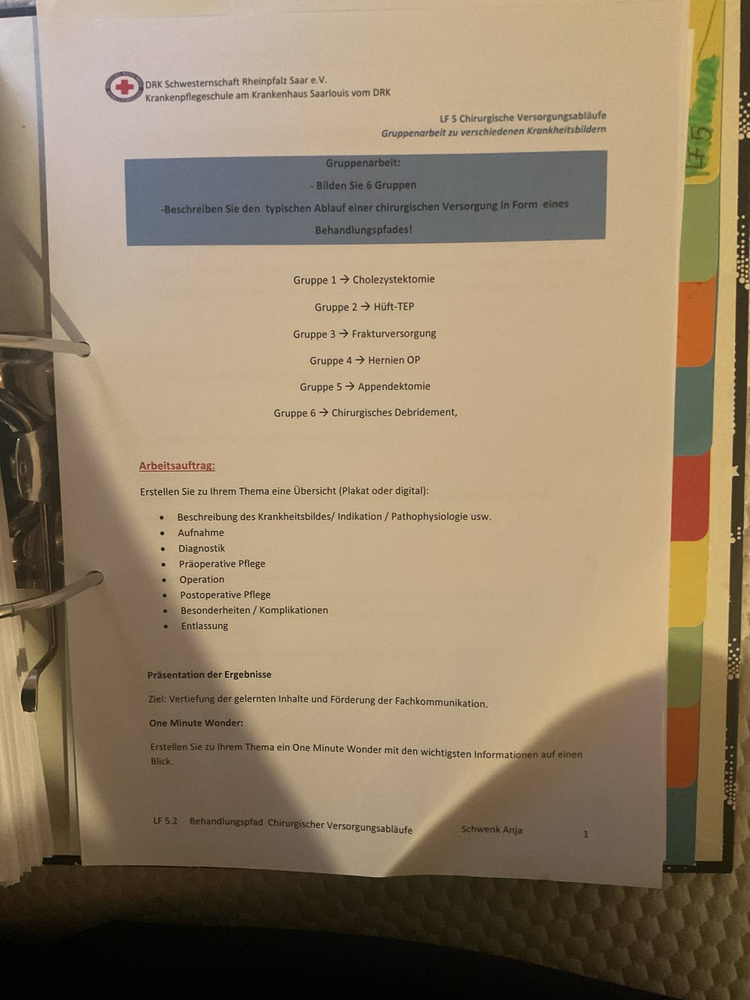
Gruppe 1 – Cholezystektomieاستئصال المرارة
Kimberly, Lena, Grace
Was ist die Gallenblase?ما هي المرارة؟
- Kleines Organ unterhalb der Leberعضو صغير تحت الكبد
- Speichert und konzentriert Gallenflüssigkeitتخزّن العصارة الصفراوية وتركّزها
- Gibt Galle zur Fettverdauung in den Dünndarm abتفرز الصفراء للأمعاء الدقيقة لهضم الدهون
Krankheitsbild und Indikationالصورة المرضية ودواعي العملية
Cholezystektomie = operative Entfernung der Gallenblase
استئصال المرارة = إزالتها جراحياً
Gallensteine (Cholezystolithiasis) → Verlegung des Ductus cysticus → Gallenstau → Entzündung: akute Cholezystitis
حصى المرارة ← انسداد القناة المرارية ← ركود الصفراء ← التهاب مرارة حاد
| Symptomeالأعراض | Weitere Komplikationenمضاعفات أخرى | Indikationenالدواعي |
|---|---|---|
| kolikartige Schmerzen im rechten bzw. mittleren Oberbauchآلام مغصية أعلى البطن يميناً أو بالوسط | Cholangitisالتهاب القنوات الصفراوية | symptomatische Cholezystolithiasisحصى مع أعراض |
| Ausstrahlung in Rücken oder rechte Schulterانتشار للظهر أو الكتف الأيمن | biliäre Pankreatitisالتهاب بنكرياس سببه الصفراء | akute Cholezystitisالتهاب حاد |
| Gallenblasenempyemتقيّح المرارة | Komplikationen des Gallensteinleidensمضاعفات الحصى | |
| Perforationانثقاب | Polypen bzw. erhöhtes Karzinomrisikoسلائل أو خطر سرطان مرتفع |
Aufnahmeالاستقبال
- Vitalzeichen kontrollierenقياس العلامات الحيوية
- Schmerzen erfassen: Lokalisation, Intensität, Charakterتقييم الألم: المكان، الشدة، النوع
- Übelkeit und Erbrechen beobachtenمراقبة الغثيان والإقياء
- Haut und Skleren auf Ikterus beobachtenمراقبة الجلد وبياض العين للصفار (يرقان)
- Anamnese: Vorerkrankungen, Medikamente, Allergien, OP-Erfahrungenالسيرة: أمراض سابقة، أدوية، حساسية، عمليات سابقة
- Nahrungs- und Flüssigkeitsaufnahme beachtenالانتباه للأكل والشرب
- Venösen Zugang legenوضع خط وريدي
- Patient über den Ablauf des Aufenthalts informierenإعلام المريض بمسار الإقامة
- Nüchternheit beachtenالالتزام بالصيام
Diagnostik vor der Operationالتشخيص قبل العملية
- Sonografie: Nachweis von Gallensteinen, Beurteilung der Gallenblase und der Gallengängeإثبات الحصى، تقييم المرارة والقنوات الصفراوية
- Labor: Blutbild, Elektrolyte, Kreatinin, Leberstatus, Gerinnung mit Quick, PTT, Blutgruppe, CRPتعداد دم، أملاح، كرياتينين، وظائف كبد، تخثر (Quick, PTT)، زمرة دم، CRP
- Weitere Untersuchungen: MRCP, ERCP – je nach Befundرنين للقنوات الصفراوية / تنظير القنوات، حسب النتائج
Präoperative Pflegeالتمريض قبل العملية
Ziel: Operationsfähigkeit sicherstellen und den Patienten vorbereiten
الهدف: ضمان جاهزية المريض للعملية وتحضيره
| Information und Sicherheitالمعلومات والأمان | Körperliche Vorbereitungالتحضير الجسدي | Schutz und OP-Bereitschaftالحماية والجاهزية |
|---|---|---|
| Ablauf erklären, Fragen beantwortenشرح المسار والإجابة على الأسئلة | Nüchternheitالصيام | OP- und Anästhesievorbereitungتحضير للعملية والتخدير |
| Angst und Unsicherheit wahrnehmenملاحظة الخوف والقلق | Vitalzeichen kontrollieren; Medikamente nach Anordnungعلامات حيوية؛ أدوية حسب الأمر | Schmuck, Piercings, Zahnersatz ablegenنزع المجوهرات والبيرسنغ وطقم الأسنان |
| OP-Unterlagen und Einwilligungen prüfenالتحقق من أوراق العملية والموافقات | Körperpflege nach Hausstandard; Ausscheidung ermöglichenنظافة حسب معيار المستشفى؛ تمكين الإخراج | Prophylaxenالإجراءات الوقائية |
Die laparoskopische Cholezystektomie ist heute das Standardverfahren; offen wird nur in bestimmten Situationen operiert.
الاستئصال بالمنظار هو الطريقة المعيارية اليوم؛ الجراحة المفتوحة فقط في حالات معينة.
Laparoskopische Cholezystektomieالاستئصال بالمنظار
- Allgemeinanästhesie, Zugang über mehrere kleine Hautschnitteتخدير عام، دخول عبر عدة شقوق صغيرة
- Kamera und Operationsinstrumente einbringenإدخال الكاميرا والأدوات
- Gallenblasenhilus darstellenكشف عنق المرارة
- Ductus cysticus und A. cystica verschließen und durchtrennenإغلاق وقطع القناة المرارية والشريان المراري
- Gallenblase aus dem Leberbett lösenفصل المرارة عن سرير الكبد
- Gallenblase entfernenإخراج المرارة
- Kontrolle auf Blutung und Galleaustrittفحص النزيف وتسرّب الصفراء
- Zugänge verschließenإغلاق الفتحات
Offene Operation: größerer Bauchschnitt, nur in bestimmten Situationen.
العملية المفتوحة: شق بطني أكبر، فقط في حالات معينة.
Postoperative Überwachungالمراقبة بعد العملية
- Vitalzeichen kontrollierenعلامات حيوية
- Bewusstseinslage beobachtenمراقبة الوعي
- Schmerzen erfassen, Schmerztherapie nach Anordnungتقييم الألم وعلاجه حسب الأمر
- Übelkeit und Erbrechen beobachtenمراقبة الغثيان والإقياء
- Wunden und Verbände kontrollierenفحص الجروح والضمادات
- Auf Nachblutungen achtenالانتباه للنزيف اللاحق
- Drainagen kontrollieren, falls vorhandenفحص الدرنقة إن وُجدت
- Bauch beobachten: Schmerzen, Spannung, Umfangمراقبة البطن: ألم، شدّ، حجم
- Ausscheidung beobachtenمراقبة الإخراج
Post-OP: Mobilisation, Ernährung, Wundeبعد العملية: الحركة، التغذية، الجرح
- Mobilisation: möglichst frühzeitig, nach ärztlicher Vorgabe; Thromboseprophylaxe; Atemprophylaxe; Kreislauf beobachtenأبكر ما يمكن حسب الطبيب؛ وقاية من الجلطات؛ وقاية تنفسية؛ مراقبة الدورة الدموية
- Ernährung: Kostaufbau nach Anordnung und Verträglichkeit; auf Übelkeit, Erbrechen und Bauchbeschwerden achtenإعادة الأكل تدريجياً حسب الأمر والتحمّل؛ انتباه للغثيان والإقياء وشكاوى البطن
- Wundversorgung: kleine laparoskopische Wunden beobachten; auf Entzündungszeichen achtenمراقبة جروح المنظار الصغيرة؛ الانتباه لعلامات الالتهاب
Mögliche Komplikationenالمضاعفات المحتملة
- Nachblutungنزيف لاحق
- Wundinfektionالتهاب الجرح
- Intraabdominelle Infektionعدوى داخل البطن
- Galleleck / Gallefistelتسرّب صفراء / ناسور
- Verletzung der Gallenwegeإصابة القنوات الصفراوية
- Verletzung benachbarter Organeإصابة أعضاء مجاورة
- Gallenstau bzw. verbliebene Gallengangsteineركود صفراء أو حصى متبقية
- Postoperative Schmerzen, Übelkeit / Erbrechenألم، غثيان / إقياء بعد العملية
- Thrombose / Embolie, Pneumonieجلطة / انصمام، التهاب رئوي
Warnzeichen für die Pflegeعلامات الخطر للتمريض
- Zunehmende oder starke Bauchschmerzenألم بطن متزايد أو شديد
- Fieberحرارة
- Tachykardie / Hypotonieتسرّع قلب / هبوط ضغط
- Zunehmender Ikterusيرقان متزايد
- Auffällige Drainage mit Galle oder Blutدرنقة فيها صفراء أو دم
- Abwehrspannungتشنّج دفاعي
- Kreislaufverschlechterungتدهور الدورة الدموية
Entlassungالخروج
| Vor der Entlassungقبل الخروج | Warnzeichen erklärenشرح علامات الخطر |
|---|---|
| Wundzustand kontrollierenفحص الجرح | Fieberحرارة |
| Schmerzen und Allgemeinzustand beurteilenتقييم الألم والحالة العامة | zunehmende Schmerzenألم متزايد |
| Mobilität und Nahrungsaufnahme berücksichtigenمراعاة الحركة والأكل | starke Übelkeit / Erbrechenغثيان / إقياء شديد |
| Verhalten nach der OP gemäß ärztlicher Empfehlung erklärenشرح السلوك بعد العملية | Gelbfärbung von Haut / Sklerenاصفرار الجلد/العين |
| Medikamente und weitere Termine besprechenمناقشة الأدوية والمواعيد | auffällige Wundsekretionإفرازات جرح غير طبيعية |
| Entlassungsunterlagen mitgeben; sicherer Übergang nach Hauseإعطاء أوراق الخروج؛ انتقال آمن للبيت | Wundbeobachtung erklärenشرح مراقبة الجرح |
Fazitالخلاصة
Alle Folien der Präsentation (13)كل شرائح العرض


Gruppe 2 – Hüft-TEPاستبدال مفصل الورك الكلي
Simon, Luca & Charlize

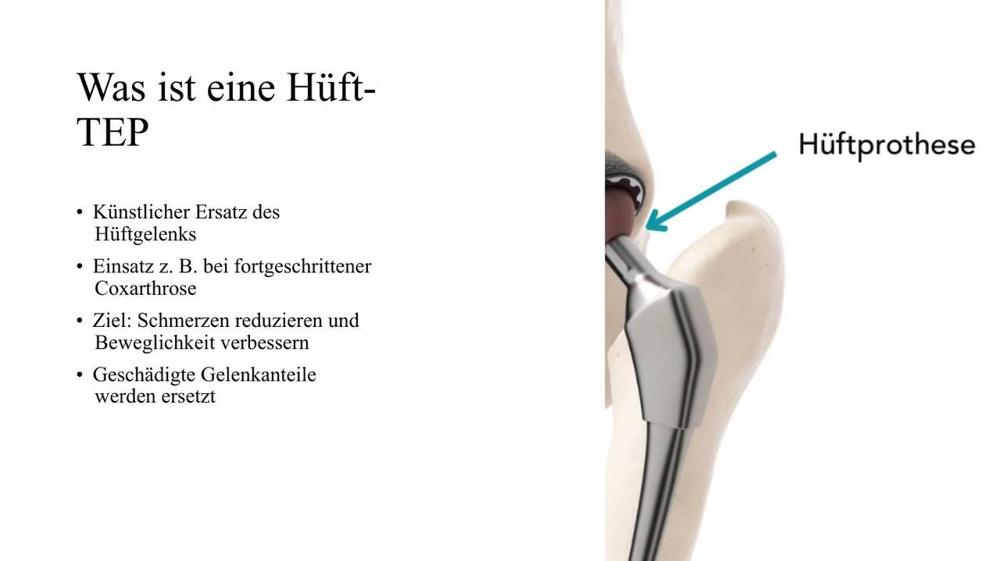
Was ist eine Hüft-TEP?ما هو؟
- Künstlicher Ersatz des Hüftgelenksبديل صناعي لمفصل الورك
- Einsatz z. B. bei fortgeschrittener Coxarthroseيُستخدم مثلاً في خشونة الورك المتقدمة
- Ziel: Schmerzen reduzieren und Beweglichkeit verbessernالهدف: تقليل الألم وتحسين الحركة
- Geschädigte Gelenkanteile werden ersetztتُستبدل أجزاء المفصل التالفة
Gründe für eine Hüft-TEPأسباب العملية
- Fortgeschrittene Hüftarthrose (Coxarthrose)خشونة ورك متقدمة
- Starke bzw. anhaltende Schmerzenألم شديد أو مستمر
- Deutliche Bewegungseinschränkungenمحدودية حركة واضحة
- Einschränkung der Lebensqualität und Alltagsaktivitätenتراجع جودة الحياة والأنشطة اليومية
- Konservative Behandlung wie Medikamente, Physiotherapie und Bewegung reicht nicht mehr ausالعلاج المحافظ (أدوية، علاج طبيعي، حركة) لم يعد كافياً
- Außerdem: mediale Schenkelhalsfraktur bei > 65 Jahren, insbesondere TEP bei zusätzlich bestehender Coxarthroseوأيضاً كسر عنق الفخذ الإنسي فوق 65 سنة، خصوصاً مع وجود خشونة
Frakturen des proximalen Femursكسور أعلى عظم الفخذ
- Hüftgelenknahe Frakturenكسور قريبة من مفصل الورك
- Häufig bei älteren Menschenشائعة عند كبار السن
- Meist nach Sturzغالباً بعد سقوط
- Bei jüngeren Menschen eher nach schwerem Traumaعند الشباب غالباً بعد إصابة قوية
Ziele der Behandlungأهداف العلاج
- Stabile Hüftgelenksituation wiederherstellenإعادة ثبات المفصل
- Anatomische Gelenkverhältnisse herstellenإعادة الوضع التشريحي للمفصل
- Operative Versorgung innerhalb von 24 Stundenالعملية خلال 24 ساعة
- Mobilität frühzeitig wiedererlangenاستعادة الحركة مبكراً
- Komplikationen und Folgeerkrankungen vermeiden (Thrombose, Lungenembolie, Pneumonie, Dekubitus, Immobilität)تجنّب المضاعفات (جلطة، انصمام رئوي، التهاب رئة، قرحة فراش، عدم حركة)

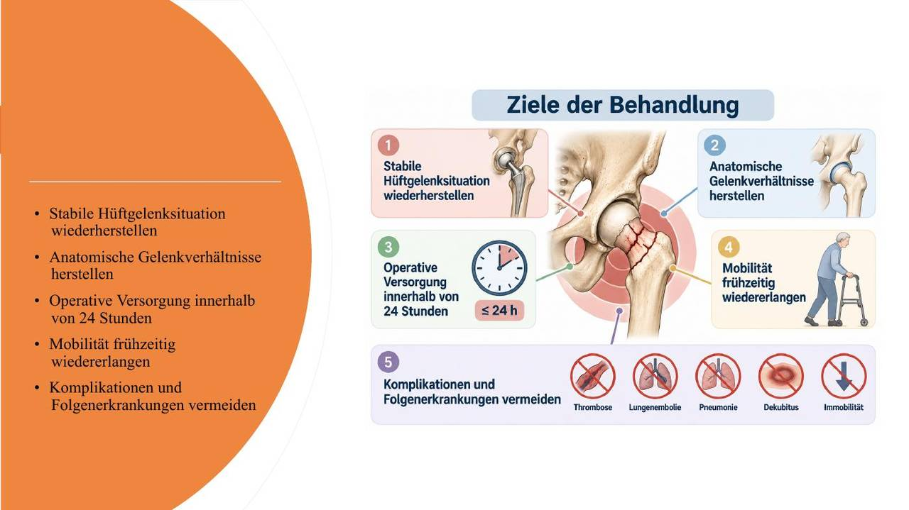
Diagnostikالتشخيص
- Röntgen: Beckenübersicht + betroffene Hüfteأشعة للحوض كامل + الورك المصاب
- Thorax-Röntgen und EKGأشعة صدر وتخطيط قلب
- Labor: kleines Blutbild, Gerinnung, Kreatinin, Blutzucker, Urinstatusتعداد دم صغير، تخثر، كرياتينين، سكر، فحص بول
- Anamnese und körperliche Untersuchungالسيرة والفحص الجسدي
- Medikamentenanamnese – besonders Antikoagulation beachtenسؤال عن الأدوية – خاصة مميعات الدم
Formen und operative Versorgungأنواع الكسور وطريقة العلاج
| Frakturالكسر | Versorgungالعلاج |
|---|---|
| Mediale Schenkelhalsfraktur > 65 J.كسر عنق إنسي فوق 65 | DEP, bei Coxarthrose TEPمفصل جزئي، ومع خشونة مفصل كامل |
| Mediale Schenkelhalsfraktur < 65 J.كسر عنق إنسي تحت 65 | kopferhaltende Osteosyntheseتثبيت مع الحفاظ على رأس الفخذ |
| Laterale Schenkelhalsfrakturكسر عنق وحشي | Intertan-Nagel oder DHSمسمار Intertan أو برغي ورك ديناميكي |
| Pertrochantäre Frakturكسر عبر المدوّر | Intertan-Nagelمسمار Intertan |
| Subtrochantäre Frakturكسر تحت المدوّر | langer Intertan-Nagelمسمار Intertan طويل |
Präoperative Vorbereitungالتحضير قبل العملية
- Aufklärung und Einwilligungsfähigkeit beachtenالشرح والانتباه لأهلية الموافقة
- Ruhigstellung in Schaumstofflagerungsschieneتثبيت الساق في جبيرة إسفنجية
- Thromboseprophylaxeوقاية من الجلطات
- Körperreinigungتنظيف الجسم
- Rasur/Clipping im OP-Vorraumحلاقة/قص الشعر في غرفة ما قبل العمليات
- ggf. Urinkatheterقسطرة بولية إذا لزم
- Antibiotikaprophylaxeمضاد حيوي وقائي
- geriatrisches Screening ab 70 Jahren bzw. bei Hinweis auf kognitive Einschränkungفحص شيخوخة من 70 سنة أو عند شك بضعف إدراكي
Nachbehandlungالعلاج بعد العملية
- postoperative Schmerztherapieعلاج الألم
- DEP/TEP ab dem 1. Tag belastungsfähigالمفصل الجزئي/الكامل يتحمّل الوزن من اليوم الأول
- Belastung bei Osteosynthesen abhängig vom Verfahrenالتحميل بعد التثبيت حسب الطريقة
- konsequente Thromboseprophylaxeوقاية صارمة من الجلطات
- postoperative Röntgenkontrolleأشعة متابعة
- frühzeitige Einbindung des Sozialdienstesإشراك الخدمة الاجتماعية مبكراً
- Anschlussheilbehandlung (AHB) einleitenبدء إعادة التأهيل اللاحق
Physiotherapie und Mobilisationالعلاج الطبيعي والتحريك
Ab dem 1. postoperativen Tag:
من اليوم الأول بعد العملية:
- Atemgymnastikتمارين تنفس
- Bewegungstherapie im Bettتمارين حركة في السرير
- Aufstehen und Belastung erprobenتجربة الوقوف والتحميل
- frühestmöglich Gehen mit Gehstützenالمشي بالعكازات بأقرب وقت
- intensive Gehschuleتدريب مشي مكثف
- Ziel: persönliche Unabhängigkeit wiedererlangenالهدف: استعادة الاستقلالية
Wichtig nach der OPمهم بعد العملية
- Bewegungsübungen regelmäßig durchführenتمارين حركة بانتظام
- Beweglichkeit fördern, Muskulatur aktivierenتحسين المرونة وتنشيط العضلات
- Übungen langsam und kontrolliert durchführenالتمارين ببطء وتحكّم
- Belastungs- und Bewegungsvorgaben beachtenالالتزام بتعليمات التحميل والحركة
- Ziel: Mobilität und Selbstständigkeit fördernالهدف: الحركة والاستقلالية

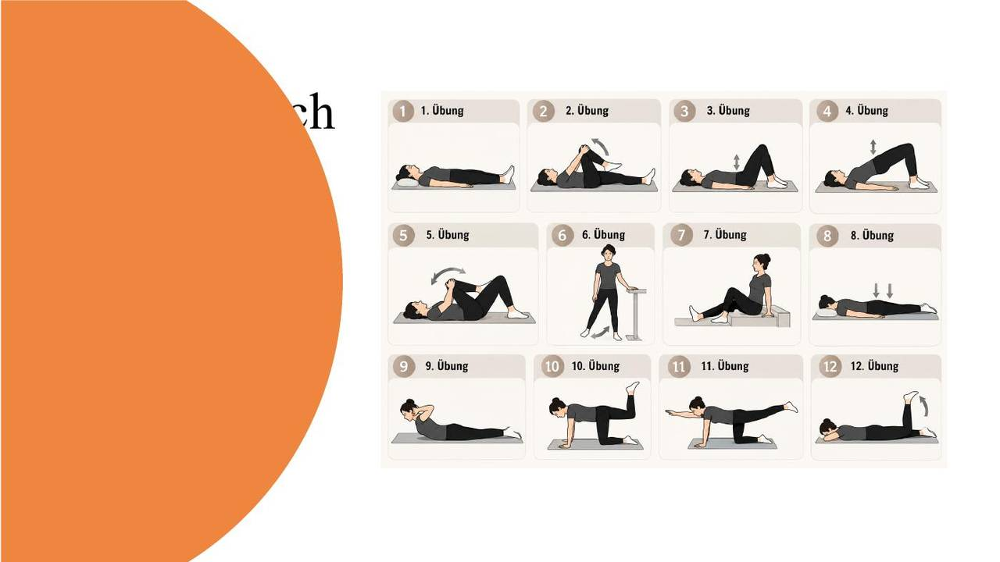
Wund- und Verlaufskontrolleمراقبة الجرح والمسار
- regelmäßige Verbandwechsel ab dem 2. postoperativen Tagتغيير الضماد بانتظام من اليوم الثاني
- Drainagen nach Fördermenge entfernenسحب الدرنقة حسب كمية الإفراز
- Fäden ab dem 12. postoperativen Tag entfernenفك الغرز من اليوم 12
- Labor: 1. Tag kleines Blutbild; 7. Tag kleines Blutbild + Urinstatusمختبر: يوم 1 تعداد دم صغير؛ يوم 7 تعداد دم + فحص بول
Mögliche Komplikationenالمضاعفات
- Nachblutungنزيف
- Thrombose / Lungenembolieجلطة / انصمام رئوي
- Infektion, Wundheilungsstörungعدوى، اضطراب التئام الجرح
- Prothesenluxationخلع المفصل الصناعي
- Implantatversagen / Implantatbruchفشل/كسر الزرعة
- Ausbruch oder Dislokation von Osteosynthese- oder Prothesenmaterialانخلاع أو تزحزح مواد التثبيت أو المفصل
- Schmerzen und Immobilitätألم وعدم حركة
Komplikationen erkennenاكتشاف المضاعفات
- Nachblutung: engmaschige Hb-, RR- und Pulskontrolleنزيف: مراقبة متقاربة للهيموغلوبين والضغط والنبض
- Frühinfekt: Blutbild, Temperatur und lokale Wundkontrolle auf Schmerz, Rötung, Ödem und Schwellungعدوى مبكرة: تعداد دم، حرارة، فحص الجرح (ألم، احمرار، وذمة، تورّم)
- Prothesenluxation: sofortige Reposition erforderlichخلع المفصل: إرجاعه فوراً
Besonderheitenخصوصيات
- Einsatz: häufig bei Schenkelhalsfrakturen älterer Patientenغالباً عند كسر عنق الفخذ لكبار السن
- Teilweiser Gelenkersatz: Hüftkopf wird ersetzt, Hüftpfanne bleibt erhaltenاستبدال جزئي: يُستبدل رأس الفخذ ويبقى الحُق
- Frühmobilisation: möglichst ab dem 1. postoperativen Tagتحريك مبكر من اليوم الأول
- Belastung: häufig sofortige Vollbelastung nach ärztlicher Anordnungتحميل كامل فوري غالباً حسب الطبيب
- Luxationsgefahr: bestimmte Bewegungen je nach Operationszugang vermeidenخطر الخلع: تجنب حركات معينة حسب مدخل العملية
- Thromboseprophylaxe: Medikamente und frühzeitige Bewegungأدوية وحركة مبكرة
- Wundkontrolle: auf Rötung, Schwellung, Schmerzen und Nachblutungen achtenاحمرار، تورم، ألم، نزيف
- Physiotherapie: Gehtraining und Muskelaufbauتدريب مشي وبناء عضلات
- Besonderes Risiko: langfristiger Verschleiß der natürlichen Hüftpfanneخطر خاص: تآكل الحُق الطبيعي على المدى الطويل
Entlassung und Weiterbehandlungالخروج والمتابعة
- Entlassung nach Abschluss der Wundheilungالخروج بعد التئام الجرح
- vorläufiger Entlassungsbericht bei direkter Verlegung in die Rehaتقرير خروج مؤقت عند النقل المباشر للتأهيل
- wichtige Inhalte: Diagnose/Behandlung, Wundsituation, Belastungsfähigkeit, Belastungskonzept und Begleitmedikationالتشخيص/العلاج، حالة الجرح، قدرة التحمّل، خطة التحميل، الأدوية المرافقة
- weitere Röntgenkontrollen je nach Operationsverfahrenأشعة متابعة حسب نوع العملية
- Rehabilitation / AHBإعادة تأهيل
Alltag nach der Hüft-TEPالحياة اليومية بعد العملية
- Alltagsaktivitäten schrittweise steigernزيادة الأنشطة تدريجياً
- Treppensteigen wird bereits in der Klinik geübtصعود الدرج يُتدرّب عليه في المستشفى
- Autofahren erst bei ausreichender Beweglichkeit und Sicherheitالقيادة فقط مع حركة وأمان كافيين
- Rückkehr zur Arbeit abhängig von Tätigkeit und Heilungsverlaufالعودة للعمل حسب نوعه ومسار الشفاء
- Sportliche Aktivitäten schrittweise wieder aufnehmenالعودة للرياضة تدريجياً
- Hilfsmittel bei Bedarf weiterhin nutzenاستخدام الوسائل المساعدة عند الحاجة
Fazitالخلاصة


Gruppe 3 – Frakturversorgungعلاج الكسور
1. Krankheitsbild / Indikation / Pathophysiologieوصف المرض / الدواعي / الفيزيولوجيا المرضية
- Krankheitsbild: Unterbrechung der Knochenkontinuität durch traumatische Einwirkung (z. B. Sturz, Unfall) oder pathologische Ursachen.انقطاع استمرارية العظم بسبب إصابة (سقوط، حادث) أو أسباب مرضية
- Indikation: Dislozierte, instabile oder offene Knochenbrüche (z. B. distale Radiusfraktur, Femurfraktur).كسور متزحزحة، غير ثابتة أو مفتوحة (مثل كسر نهاية الكعبرة، كسر الفخذ)
- Pathophysiologie: Gewebeschädigung mit Hämatombildung, Entzündungsreaktion, Kallusbildung und anschließender Knochenremodellierung.تضرر النسيج مع ورم دموي، ثم رد فعل التهابي، ثم تكوّن الدُّشبُذ (Kallus)، ثم إعادة بناء العظم
2. Aufnahmeالاستقبال
- Administrative Erfassung der Patientendaten und des Unfallhergangs.التسجيل الإداري لبيانات المريض وكيفية حدوث الإصابة
- Erstbegutachtung: Erfassung der Vitalzeichen (RR, Puls, SpO₂, Temperatur).التقييم الأولي: ضغط، نبض، أكسجين، حرارة
- DMS-Kontrolle: Überprüfung von Durchblutung, Motorik und Sensibilität an der betroffenen Extremität.فحص DMS: التروية، الحركة، والإحساس في الطرف المصاب
3. Diagnostikالتشخيص
- Bildgebung: Röntgen der betroffenen Extremität in 2 Ebenen; ggf. CT/MRT bei komplexen oder Gelenkfrakturen.أشعة للطرف المصاب من اتجاهين، وطبقي/رنين للكسور المعقدة أو المفصلية
- Labor: Blutbild, Gerinnungsstatus (Quick/INR, PTT), Elektrolyte, Nierenwerte, Blutgruppe (bei OP-Indikation).تعداد دم، تخثر، أملاح، وظائف كلى، زمرة دم (عند الحاجة لعملية)
- Anästhesieaufklärung und EKG.شرح التخدير وتخطيط قلب
4. Präoperative Pflegeالتمريض قبل العملية
- Nüchternheit: keine feste Nahrung ab 6 Std., klare Flüssigkeiten bis 2 Std. vor OP.لا أكل صلب قبل 6 ساعات، سوائل صافية حتى ساعتين قبل العملية
- Ruhigstellung: Sachgerechte Lagerung / Schienung der Fraktur zur Schmerzreduktion und Gewebeschonung.وضعية صحيحة / جبيرة لتقليل الألم وحماية النسيج
- Vorbereitung: Hautdesinfektion/OP-Vorbereitung, Schmuck/Prothesen entfernen, Thromboseprophylaxe (MTS/NMH).تعقيم الجلد، نزع المجوهرات/الأطقم، وقاية من الجلطات (جوارب ضاغطة / هيبارين منخفض الوزن الجزيئي)
5. Operation (Chirurgische Versorgung)العملية
- Konservativ: Reposition und Ruhigstellung im Gips / Schiene.محافظ: إرجاع العظم لمكانه وتثبيته بالجبس/الجبيرة
- Operativ (Osteosynthese): offene oder geschlossene Reposition; Fixierung mittels Platten, Schrauben, Marknägeln oder Fixateur externe.جراحي: إرجاع مفتوح أو مغلق؛ تثبيت بصفائح، براغي، مسامير نخاعية أو مثبّت خارجي
6. Postoperative Pflegeالتمريض بعد العملية
- Überwachung: Vitalzeichen, Bewusstseinslage und Schmerzintensität (NRS-Skala).علامات حيوية، الوعي، شدة الألم (مقياس NRS)
- Wund- & Verbandskontrolle: Kontrolle auf Nachblutungen, Schwellung und intakte Drainagen.نزيف لاحق، تورّم، سلامة الدرنقة
- Regelmäßige DMS-Kontrolle: stündliche Prüfung von Durchblutung, Motorik und Sensibilität.فحص DMS كل ساعة
- Lagerung & Mobilisation: Hochlagerung der Extremität; Frühmobilisation nach physiotherapeutischer Anleitung.رفع الطرف؛ تحريك مبكر حسب العلاج الطبيعي
7. Besonderheiten / Komplikationenخصوصيات / مضاعفات
- Weitere Komplikationen: Wundinfektion, Thrombose / Lungenembolie, Pseudarthrose (Falschgelenkbildung).التهاب الجرح، جلطة / انصمام رئوي، مفصل كاذب (عدم التحام الكسر)
8. Entlassungالخروج
- Abschließendes Entlassgespräch und Aushändigung des Arztbriefes.حديث الخروج وتسليم رسالة الطبيب
- Rezeptierung von Analgetika und Antikoagulation (Thromboseprophylaxe).وصفة مسكنات ومميعات
- Anleitung: Verbandwechsel, Pflegetipps für Gips/Wunde, Nachsorge beim niedergelassenen Arzt/Orthopäden.تعليم: تغيير الضماد، العناية بالجبس/الجرح، المتابعة عند الطبيب أو أخصائي العظام
Begriffeمصطلحات
- DMS = Durchblutung, Motorik, Sensibilität: Farbe, Temperatur und Puls der Extremität; kann der Patient die Finger/Zehen bewegen; spürt er sie?التروية، الحركة، الإحساس: لون الطرف وحرارته ونبضه، هل يحرّك أصابعه، وهل يحس فيها؟
- Kompartmentsyndrom: Blutung oder Schwellung im Muskel erhöht den Druck, Muskeln und Nerven werden nicht mehr durchblutet. Ohne schnelle Behandlung stirbt der Muskel ab.النزيف أو التورم داخل العضلة بيرفع الضغط فبيوقف الدم عن العضلات والأعصاب. إذا ما انعالج بسرعة العضلة بتموت.
Anmerkungenملاحظات

Gruppe 4 – Hernien-OPعملية الفتق
Siji, Jean & Calista
Was ist eine Hernien-OP?ما هي عملية الفتق؟
- Eine Hernie wird umgangssprachlich auch Bruch genannt.الفتق يُسمى بالعامية "Bruch"
- Dabei stülpt sich das Bauchfell durch eine Lücke in der Bauchwand.يبرز غشاء البطن من فتحة في جدار البطن
- In dieser Ausstülpung können sich Teile von Bauchorganen befinden.قد يحتوي البروز على أجزاء من أعضاء البطن
- Eine Hernien-OP ist die operative Behandlung eines solchen Bruchs.عملية الفتق هي العلاج الجراحي له
- Dabei wird die Bruchstelle operativ versorgt.يتم إصلاح مكان الفتق جراحياً
- Ziel ist es, Beschwerden und gefährliche Komplikationen zu vermeiden.الهدف: تجنب الشكاوى والمضاعفات الخطيرة
Krankheitsbild und Entstehungالصورة المرضية والنشوء
- Eine Hernie besteht aus Bruchpforte, Bruchsack und Bruchinhalt.يتكون الفتق من: بوابة الفتق، كيس الفتق، محتوى الفتق
- Die Bruchpforte ist die Lücke, durch die sich das Bauchfell vorwölbt.البوابة هي الفتحة التي يبرز منها الغشاء
- Der Bruchsack wird vom Bauchfell gebildet.الكيس يتكون من غشاء البطن
- Der Bruchinhalt kann aus Teilen von Bauchorganen bestehen.المحتوى قد يكون أجزاء من الأعضاء
- Hernien können angeboren oder erworben sein.الفتق قد يكون خلقياً أو مكتسباً
- Ursachen erworbener Hernien sind unter anderem Bindegewebsschwäche und erhöhter Druck im Bauchraum.أسباب المكتسب: ضعف النسيج الضام وزيادة الضغط داخل البطن
Formen und Symptomeالأنواع والأعراض
| Formالنوع | Häufigkeitالنسبة |
|---|---|
| Leistenhernieفتق إربي | ca. 80 % (häufigste Form)~80% (الأكثر شيوعاً) |
| Schenkelhernieفتق فخذي | ca. 10 % |
| Nabelhernieفتق سُرّي | ca. 5 % |
| Andere Hernienformenأنواع أخرى | ca. 5 % |
- Typisch ist eine sichtbare oder tastbare Schwellung.نموذجياً: تورّم مرئي أو محسوس
- Es können ziehende Schmerzen bei Bewegung oder Belastung auftreten.ألم شادّ عند الحركة أو الجهد
- Beim Husten oder Niesen kann die Schwellung deutlicher werden.يزداد التورم وضوحاً عند السعال أو العطس
Wann ist eine Operation notwendig?متى تلزم العملية؟
- Eine Hernie kann operativ behandelt werden.يمكن علاج الفتق جراحياً
- Eine reponible Hernie lässt sich zurückdrücken.القابل للرد: يمكن إرجاعه
- Eine irreponible Hernie lässt sich nicht zurückdrücken.غير القابل للرد: لا يرجع
- Bei einer inkarzerierten Hernie ist Gewebe eingeklemmt.المختنق: نسيج محصور
- Dadurch kann die Durchblutung des Gewebes gestört werden.فتضطرب تروية النسيج
- Im schlimmsten Fall kann Darmgewebe absterben.وفي أسوأ الحالات يموت نسيج الأمعاء
Aufnahme des Patientenاستقبال المريض
- Patienten begrüßen und über den Ablauf informieren.الترحيب بالمريض وإعلامه بالمسار
- Pflegeanamnese durchführen.إجراء السيرة التمريضية
- Vitalzeichen kontrollieren und dokumentieren.قياس وتوثيق العلامات الحيوية
- Schmerzen erfragen und einschätzen.السؤال عن الألم وتقييمه
- Beschwerden und Beobachtungen dokumentieren.توثيق الشكاوى والملاحظات
- Auf Fragen und Ängste des Patienten eingehen.التعامل مع أسئلة ومخاوف المريض
Diagnostikالتشخيص
- Beschwerden und Schmerzen des Patienten erfassen.تسجيل الشكاوى والألم
- Auf sichtbare oder tastbare Schwellungen achten.الانتباه للتورم المرئي/المحسوس
- Beobachten, ob sich die Schwellung bei Belastung verändert.ملاحظة تغيّر التورم مع الجهد
- Ärztliche Untersuchungen begleiten.مرافقة الفحوصات الطبية
- Untersuchungsergebnisse und Beobachtungen dokumentieren.توثيق النتائج والملاحظات
- Besonders auf Hinweise einer Einklemmung achten.الانتباه خاصة لعلامات الاختناق
Präoperative Pflegeالتمريض قبل العملية
- Patienten auf die bevorstehende Operation vorbereiten.تحضير المريض للعملية
- Nüchternheit überprüfen.التأكد من الصيام
- Hautvorbereitung nach Anordnung durchführen.تحضير الجلد حسب الأمر
- Darauf achten, dass Schmuck abgelegt wird.التأكد من نزع المجوهرات
- Vitalzeichen und Schmerzen kontrollieren.مراقبة العلامات الحيوية والألم
- Patienten informieren und bei Unsicherheiten unterstützen.إعلام المريض ودعمه عند القلق
- Begleitung und Übergabe zum OP organisieren.تنظيم المرافقة والتسليم للعمليات
Operationالعملية
- Die Hernie wird operativ versorgt.يُعالج الفتق جراحياً
- Der Bruchinhalt wird, soweit möglich, zurückverlagert.يُعاد المحتوى لمكانه قدر الإمكان
- Die Bruchstelle wird chirurgisch behandelt.يُصلح مكان الفتق
- Ziel ist es, weitere Beschwerden und Komplikationen zu verhindern.الهدف منع الشكاوى والمضاعفات
- Die operative Versorgung wird als Herniotomie bezeichnet.تُسمى العملية Herniotomie
Postoperative Pflegeالتمريض بعد العملية
- Patienten nach der Operation beobachten.مراقبة المريض
- Vitalzeichen regelmäßig kontrollieren.علامات حيوية بانتظام
- Schmerzen erfassen und dokumentieren.تقييم الألم وتوثيقه
- Operationswunde und Verband beobachten.مراقبة الجرح والضماد
- Patienten bei der Mobilisation unterstützen.مساعدة المريض بالحركة
- Auf Veränderungen und mögliche Komplikationen achten.الانتباه للتغيرات والمضاعفات
- Pflegemaßnahmen dokumentieren.توثيق الإجراءات التمريضية
Besonderheiten und Komplikationenخصوصيات ومضاعفات
- Obstipationsprophylaxe: Verstopfung möglichst vermeiden.الوقاية من الإمساك
- Schweres Heben vermeiden: Bauchwand nicht unnötig belasten.تجنب حمل الأوزان الثقيلة
- Eine Einklemmung kann die Durchblutung des Darms beeinträchtigen.الاختناق يضر تروية الأمعاء
- Es kann zu einem mechanischen Ileus (Darmverschluss) kommen.قد يحدث انسداد أمعاء ميكانيكي
- Eine weitere Gefahr ist die Darmnekrose (Absterben von Darmgewebe).خطر آخر: موت نسيج الأمعاء
- Auffällige Beschwerden müssen sofort weitergegeben werden.الشكاوى غير الطبيعية تُبلَّغ فوراً
Entlassung und Nachsorgeالخروج والمتابعة
- Patienten über wichtige Verhaltensregeln informieren.إعلام المريض بقواعد السلوك المهمة
- Auf das Vermeiden von schwerem Heben hinweisen.التنبيه لتجنب حمل الثقيل
- Maßnahmen zur Vermeidung von Verstopfung erklären.شرح طرق تجنب الإمساك
- Auf Beschwerden und Veränderungen aufmerksam machen.التنبيه للشكاوى والتغيرات
- Fragen des Patienten beantworten.الإجابة على الأسئلة
- Wichtige Informationen und Pflegemaßnahmen dokumentieren.توثيق المعلومات والإجراءات
Zusammenfassungالخلاصة
- Eine Hernie ist eine Ausstülpung des Bauchfells durch eine Bruchpforte.الفتق بروز للغشاء عبر بوابة الفتق
- Die häufigste Form ist die Leistenhernie.الأشيع: الفتق الإربي
- Eine eingeklemmte Hernie kann lebensgefährlich werden.الفتق المختنق قد يهدد الحياة
- Die operative Behandlung dient der Versorgung der Bruchstelle.العملية تُصلح مكان الفتق
- Die Pflege begleitet den Patienten von der Aufnahme bis zur Entlassung.التمريض يرافق المريض من الاستقبال للخروج
- Nach der OP sind besonders die Beobachtung, Obstipationsprophylaxe und das Vermeiden von schwerem Heben wichtig.بعد العملية: المراقبة، منع الإمساك، تجنب الثقيل


Gruppe 5 – Appendektomieاستئصال الزائدة الدودية
Appendizitis – Krankheitsbildالصورة المرضية
Appendizitis: Entzündung des Wurmfortsatzes (Appendix)
التهاب الزائدة الدودية
- Häufigstes Auftreten: 10.–30. Lebensjahrالأكثر بين 10 و30 سنة
- Auslöser: Koprolithen, geschwollene Lymphfollikel, Fremdkörper, Parasiten oder anatomische Abknickungحصى برازية، عقد لمفاوية متورمة، أجسام غريبة، طفيليات، أو انثناء تشريحي
- Symptome: zunächst viszeraler Schmerz im Oberbauch/Nabelbereich, später somatischer Schmerz im rechten Unterbauch; Übelkeit, Erbrechen, Fieber, Inappetenzأولاً ألم حشوي أعلى البطن/حول السرة، لاحقاً ألم أسفل البطن يميناً؛ غثيان، إقياء، حرارة، فقدان شهية
- 4 Stadien: katarrhalisch → phlegmonös → seropurulent → gangränös/perforiert4 مراحل: نزلي ← فلغموني ← مصلي قيحي ← غنغريني/مثقوب
- Indikation Appendektomie: akute, chronische/rezidivierende oder perforierte Appendizitis, Peritonitis, Abszess, Tumorverdachtالتهاب حاد، مزمن/متكرر أو مثقوب، التهاب صفاق، خراج، اشتباه ورم
- Die Appendix liegt am Übergang von Dünn- zu Dickdarm.تقع الزائدة عند انتقال الأمعاء الدقيقة للغليظة

Aufnahme in der Notaufnahmeالاستقبال في الطوارئ
- Patient kommt in der Regel als Notfall in die Notaufnahmeيأتي المريض عادةً كحالة طارئة
- Ersteinschätzung durch PFK: Symptomatik & Schmerzassessment, visuelle Einschätzung, Vitalparameterتقييم أولي من الممرض: الأعراض وتقييم الألم، تقييم بالنظر، العلامات الحيوية
- Sofortbehandlung bei: akutem Abdomen, septischem Kreislauf, unerträglichen/kaltschweißigen Schmerzenعلاج فوري عند: بطن حاد، دورة دموية إنتانية، ألم لا يُحتمل مع عرق بارد
- Administrative Notaufnahme-Erfassungالتسجيل الإداري
Diagnostik – obligate Maßnahmenالتشخيص – إجراءات إلزامية
- Anamnese & Inspektionالسيرة والمعاينة
- Auskultationالإصغاء بالسماعة
- Systematische Palpationالجسّ المنهجي
- Schmerzpunkt-Evaluation: McBurney-Punkt und Lanz-Punktتقييم نقاط الألم: نقطة ماكبرني ونقطة لانز
- Reiz- und Provokationstests: Blumberg-, Rovsing- und Psoas-Zeichenاختبارات التحريض: علامة بلومبرغ، روفسينغ، البسواس
- Blut: Leukozyten & CRPدم: كريات بيضاء و CRP
- Urin: Elektrolyte & Gerinnung (so auf der Folie)بول: أملاح وتخثر (حسب الشريحة)
- Sonographieسونار
- Röntgen-Thorax, EKGأشعة صدر، تخطيط قلب

Diagnostik – fakultative Maßnahmen & Befundeإجراءات اختيارية ونتائج
- Urologische Konsiliaruntersuchungاستشارة مسالك بولية
- CT, MRTطبقي، رنين
- Gynäkologische Untersuchungen, Schwangerschaftstestفحوصات نسائية، اختبار حمل
- Leber-/Nierenwerteوظائف كبد/كلى
| Formالشكل | Befundالنتيجة |
|---|---|
| Phlegmonöse Appendizitisالتهاب فلغموني | reine Entzündung des Gewebes, Organ intakt, lokalisiert im rechten Unterbauchالتهاب نسيج فقط، العضو سليم، موضعي أسفل البطن يميناً |
| Perforierte Appendizitisزائدة مثقوبة | Gewebe stirbt ab, Blinddarmdurchbruch, Ausbreitung im gesamten Bauchraumموت النسيج، انفجار الزائدة، انتشار في كامل البطن |
Präoperative Pflege – Vorbereitungالتحضير قبل العملية
- Aufklärung & Einwilligung: konventionelle/laparoskopische Appendektomieشرح وموافقة: مفتوحة أو بالمنظار
- Anästhesieaufklärungشرح التخدير
- Patient wird nüchtern gehaltenالمريض صائم
- Beobachten von: Schmerzen, Vitalparametern, Psyche & Flüssigkeitszufuhrمراقبة: الألم، العلامات الحيوية، الحالة النفسية، السوائل
- Anlage von Antithrombosestrümpfenلبس جوارب ضد الجلطات
- Körperpflege und Rasur: konventionell – Nabel bis Symphyse; laparoskopisch – beidseitigنظافة وحلاقة: مفتوحة – من السرة للعانة؛ منظار – الجهتين
Präoperative Pflege – OP-Vorbereitungتحضير العملية
- OP-Kleidung an Patienten gegebenإعطاء ملابس العمليات
- Piercings/Schmuck entfernenنزع البيرسنغ/المجوهرات
- Keine Abführmaßnahmenلا مُليّنات أو حقن شرجية
- Prämedikation nach ärztlicher Anordnungأدوية ما قبل العملية حسب الطبيب
Operativer Ablaufسير العملية
| Laparoskopischبالمنظار | Konventionell (offen)مفتوحة |
|---|---|
| Intubationsnarkose; Rückenlagerungتخدير مع تنبيب؛ استلقاء على الظهر | Rückenlagerungاستلقاء على الظهر |
| Semizirkuläre Inzision am kaudalen Nabelrand; Optiktrokarشق نصف دائري أسفل السرة؛ مبزل الكاميرا | Schnittführung: Wechsel- oder Pararektalschnitt rechtsشق متبادل أو بجانب العضلة المستقيمة يميناً |
| Arbeitstrokare im Unterbauch links & rechtsمبازل العمل أسفل البطن يساراً ويميناً | Abschluss: Kontrolle auf Blutungen/Kontamination; bei komplizierter Appendizitis ggf. Spülung & Drainageالختام: فحص النزيف/التلوث؛ في الحالات المعقدة غسل ودرنقة |
Postoperative Pflegeالتمريض بعد العملية
| 1. Tagاليوم الأول | 2. Tagاليوم الثاني |
|---|---|
| Patient vom Aufwachraum zur Station; Monitoring & Dokumentation der Vitalparameterمن الإفاقة للقسم؛ مراقبة وتوثيق العلامات الحيوية | Bei phlegmonöser Appendizitis: Normalkostفي الالتهاب الفلغموني: أكل عادي |
| Blutbildkontrolle; Schmerzassessment & -therapieتعداد دم؛ تقييم الألم وعلاجه | Schmerzmittel bei Bedarfمسكن عند الحاجة |
| Frühmobilisation; Fortsetzung der Thromboseprophylaxeتحريك مبكر؛ استمرار الوقاية من الجلطات | Erster Verbandswechselأول تغيير ضماد |
| Schonkostأكل خفيف | Erster Stuhlgang wird erwartetيُتوقع أول تبرز |
| Vitalparameter überwachen; Darmgeräusche abhörenمراقبة العلامات؛ الإصغاء لأصوات الأمعاء | Bei perforierter Appendizitis: Robinsondrainage je nach Sekretionsmenge ziehenعند الانثقاب: سحب درنقة روبنسون حسب الإفراز |
Besonderheiten & Komplikationenخصوصيات ومضاعفات
- Nachblutungen: sofortige Revision & Hämatomausräumungنزيف لاحق: إعادة عملية فوراً وإزالة الورم الدموي
- Stumpfinsuffizienz: sofortige Revisionتسرّب من جذع الزائدة: إعادة عملية فوراً
- Perityphlitischer Abszess/Peritonitis: Einlage einer Drainage, ggf. Spülung des Abdomensخراج حول الأعور/التهاب صفاق: درنقة، وغسل البطن إذا لزم
- Bauchdeckenabszess: Wundspreizung & Teilfädenentfernungخراج جدار البطن: فتح الجرح وإزالة بعض الغرز
Entlassung & weitere Versorgungالخروج والمتابعة
- Weiterbehandlung durch den Hausarztالمتابعة عند طبيب العائلة
- Vorläufiger Entlassungsbericht für den Patientenتقرير خروج مؤقت
- Informationen zu: Wund- & Körperpflege, körperlicher Belastung, Warnzeichen, Medikamenteneinnahme, Kontrollterminenمعلومات عن: العناية بالجرح والجسم، الجهد البدني، علامات الخطر، الأدوية، مواعيد المتابعة
Behandlungspfad auf einen Blickالمسار بنظرة
- Aufnahme – Notaufnahme, Ersteinschätzungالاستقبال – الطوارئ، التقييم الأولي
- Diagnostik – Klinik, Labor, Bildgebungالتشخيص – الفحص، المختبر، التصوير
- Präoperativ – Aufklärung, Nüchternheit, OP-Vorbereitungقبل العملية – الشرح، الصيام، التحضير
- Operation – laparoskopisch oder konventionellالعملية – بالمنظار أو مفتوحة
- Postoperativ – Monitoring, Mobilisation, Schmerztherapieبعد العملية – مراقبة، تحريك، علاج الألم
- Entlassung – Wundpflege, Warnzeichen, Kontrollenالخروج – العناية بالجرح، علامات الخطر، المتابعة


Gruppe 6 – Chirurgisches Débridementالتنظيف الجراحي للجرح
Vom Aufnahmetag bis zur Entlassung – die Rolle der Pflege in jeder Phase
من يوم الاستقبال حتى الخروج – دور التمريض في كل مرحلة
Was ist ein Débridement?ما هو؟
Entfernung von abgestorbenem, infiziertem Gewebe, Belägen und Fremdkörpern aus einer Wunde – bis ins gesunde, gut durchblutete Gewebe.
إزالة النسيج الميت والملتهب والطبقات والأجسام الغريبة من الجرح – حتى الوصول لنسيج سليم جيد التروية.
- Débridement (franz.) = „Entfesselung" – die Wunde wird von allem befreit, was die Heilung blockiert.بالفرنسية "فك القيود" – يتحرر الجرح من كل ما يمنع الشفاء
- Ziel: saubere, gut durchblutete Wunde. Erst dann kann die Wundheilung beginnen.الهدف: جرح نظيف جيد التروية. فقط بعدها يبدأ الالتئام
Krankheitsbild und Indikationمتى ولماذا؟
| Chronische oder infizierte Wundenجروح مزمنة أو ملتهبة | Warum entfernen?لماذا الإزالة؟ |
|---|---|
| Dekubitus (Druckgeschwür)قرحة الفراش | Nekrosen und Beläge blockieren neues Gewebeالنسيج الميت يمنع النسيج الجديد |
| Diabetisches Fußsyndromالقدم السكرية | Totes Gewebe ist Nährboden für Bakterienبيئة للبكتيريا |
| Ulcus cruris (offenes Bein)قرحة الساق | Infektion kann sich ausbreiten → Sepsis-Gefahrالعدوى قد تنتشر ← خطر تسمم الدم |
| Abszess, Verbrennungخراج، حرق | Nur eine saubere Wunde kann heilenفقط الجرح النظيف يلتئم |
Der Behandlungspfad im Überblickالمسار بنظرة
- Aufnahme: Wunde erfassen und dokumentierenتقييم وتوثيق الجرح
- Diagnostik: Abstrich, Labor, Gefäßeمسحة، مختبر، أوعية
- Präoperative Pflege: Vorbereiten, Schmerz lindernتحضير، تخفيف الألم
- Operation: Nekrosen entfernen, spülenإزالة النسيج الميت، غسل
- Postoperative Pflege: Überwachen, Verbandمراقبة، ضماد
- Entlassung: Überleitung, Schulungتحويل، تعليم
Pflegekräfte sind in allen Phasen beteiligt – ihre Aufgaben unterscheiden sich, sind aber immer entscheidend für den Verlauf.
الممرضون مشاركون بكل المراحل – مهامهم مختلفة لكن دائماً حاسمة
Phase 1 – Aufnahmeالاستقبال
| Wundanamneseسيرة الجرح | Wunddokuتوثيق الجرح | Risikenالمخاطر |
|---|---|---|
| Ursache der Wundeالسبب | Größe und Tiefeالحجم والعمق | Schmerz (Skala)الألم (مقياس) |
| Wie lange besteht sie?منذ متى؟ | Exsudat, Geruch, Wundrandالإفراز، الرائحة، حافة الجرح | Ernährung, Blutzuckerالتغذية، السكر |
| Bisherige Therapieالعلاج السابق | Foto zur Verlaufskontrolleصورة للمتابعة | Blutverdünner, Allergienمميعات، حساسية |
Phase 2 – Diagnostikالتشخيص
| Wundabstrichمسحة الجرح | Laborالمختبر | Gefäße & Bildالأوعية والتصوير |
|---|---|---|
| Welche Keime? MRSA?أي جراثيم؟ | CRP, Leukozyten; Blutzucker / HbA1c; AlbuminCRP، كريات بيضاء؛ السكر / التراكمي؛ الألبومين | Doppler: Durchblutung? Röntgen / MRT: Osteomyelitis?دوبلر: التروية؟ أشعة/رنين: التهاب عظم؟ |
| Pflege: Abstrich entnehmen, beschriftenأخذ المسحة وتسميتها | Pflege: Blutentnahmeسحب الدم | Pflege: begleitenالمرافقة |
Pflege: Patient informieren, nüchtern lassen, Proben beschriften und weiterleiten.
التمريض: إعلام المريض، إبقاؤه صائماً، تسمية العينات وإرسالها.
Phase 3 – Präoperative Pflegeالتمريض قبل العملية
| Formalesالأمور الرسمية | Schmerz & BZالألم والسكر | Hygieneالنظافة |
|---|---|---|
| Nüchtern bei Narkoseصيام عند التخدير | Schmerzmittel vorher gebenمسكن مسبقاً | Ggf. Isolation (MRSA)عزل إذا لزم |
| Einwilligung prüfenالتحقق من الموافقة | Blutzucker kontrollierenفحص السكر | Schmuck abنزع المجوهرات |
| OP-Checklisteقائمة فحص العملية | Vitalzeichen messenقياس العلامات الحيوية | Identität & Seite prüfenالتحقق من الهوية وجهة العملية |
Phase 4 – Operationالعملية
- Ort: im OP oder am Patientenbett – je nach Größe und Tiefe der Wundeفي غرفة العمليات أو عند السرير – حسب حجم وعمق الجرح
- Vorgehen: Skalpell, scharfer Löffel, Schere; Abtragen bis ins gesunde, blutende Gewebeمشرط، ملعقة حادة، مقص؛ الإزالة حتى النسيج السليم النازف
- Danach: gründliche Wundspülung; ggf. Gewebeprobe; ggf. Vakuumtherapieغسل الجرح جيداً؛ عينة نسيج؛ علاج بالشفط إذا لزم
Phase 5 – Postoperative Pflegeالتمريض بعد العملية
| Überwachungالمراقبة | Wundeالجرح | Heilung fördernدعم الشفاء |
|---|---|---|
| Schmerz einschätzen und behandelnتقييم الألم وعلاجه | Aseptischer Verbandwechselتغيير ضماد معقم | Eiweißreiche Ernährungتغذية غنية بالبروتين |
| Nachblutung früh erkennenاكتشاف النزيف مبكراً | Infektzeichen: Rötung, Wärme, Fieberعلامات العدوى: احمرار، حرارة موضعية، حمى | Druckentlastung, Lagerungتخفيف الضغط، تغيير الوضعية |
| Vitalzeichenالعلامات الحيوية | VAC: Sog & Dichtigkeitجهاز الشفط: قوة الشفط والإحكام | Wunddokumentationتوثيق الجرح |
Besonderheiten & Komplikationenخصوصيات ومضاعفات
- Blutung: Abtragen bis ins gesunde Gewebe → Nachblutung möglichالإزالة حتى السليم ← نزيف لاحق ممكن
- Schmerzen: Eingriff ist schmerzhaft → Analgesie vorher und danachالإجراء مؤلم ← مسكن قبله وبعده
- Infektion bis Sepsis: Fieber, Tachykardie, Verwirrtheit sofort meldenحرارة، تسرّع قلب، تشوّش: إبلاغ فوري
- Wiederholung nötig: Oft sind mehrere Débridements erforderlichغالباً يلزم أكثر من تنظيف
- Außerdem: Verletzung gesunder Strukturen (Sehnen, Gefäße, Nerven) möglich.وأيضاً: إصابة أنسجة سليمة (أوتار، أوعية، أعصاب) ممكنة
Phase 6 – Entlassungالخروج
| Überleitung & Nachsorgeالتحويل والمتابعة | Warnzeichen → sofort zum Arztعلامات الخطر ← فوراً للطبيب |
|---|---|
| Überleitung: ambulanter Pflegedienst / Wundexperteتحويل لخدمة تمريض منزلي / خبير جروح | Fieberحرارة |
| Verbandmaterial organisieren; Patient und Angehörige schulenتأمين مواد الضماد؛ تعليم المريض والأهل | Zunehmende Rötung oder Schmerzاحمرار أو ألم متزايد |
| Druckentlastung, passende Schuhe (diabetischer Fuß); Nachsorgetermine vereinbarenتخفيف الضغط، أحذية مناسبة (للقدم السكرية)؛ مواعيد المتابعة | Übler Geruch, Eiterرائحة كريهة، قيح |
Merkeتذكّر


Nervensystem (LF 5.3)الجهاز العصبي
1. Was passiert hier?شو عم يصير هون؟
- Wärme-Rezeptorمستقبل الحرارة
- Weiterleitung, Signalنقل الإشارة
- Schutz (Reflex)حماية (منعكس)
- Reaktion auf ein Signalرد فعل على إشارة
- Wahrnehmung Schmerzالإحساس بالألم
- Auf eine Aktion folgt eine Reaktionكل فعل يتبعه رد فعل
Welche Strukturen sind beteiligt?أي بُنى مشاركة؟
- Nervenالأعصاب
- Zentrales & peripheres Nervensystemالجهاز المركزي والمحيطي
- Rückenmarkالنخاع الشوكي
- Gehirnالدماغ
- Sprachzentrum (sie sagt „Au")مركز الكلام (لأنها قالت "آي")
- Muskelnالعضلات
- Hautالجلد
2. Unser Nervensystem (NS) – Grundlagenالجهاز العصبي – الأساسيات
- NS steuert die Bewegungen und die Organfunktionenيتحكم بالحركة ووظائف الأعضاء
- Nimmt Informationen (Sinnesreize) aus der Umwelt und dem Körper auf, leitet sie weiter und verarbeitet sieيستقبل المعلومات (المنبهات الحسية) من البيئة والجسم، ينقلها ويعالجها
- Löst bewusste oder unbewusste, motorische oder vegetative Reaktionen ausيطلق ردود فعل واعية أو لاواعية، حركية أو لاإرادية
- Speichert Informationen (Gedächtnis)يخزّن المعلومات (الذاكرة)
- Sitz des Bewusstseins, des Denkens, des Lernens, der Emotion und des Empfindensمقر الوعي، التفكير، التعلّم، المشاعر، والإحساس
3. Das Nervensystem – Aufbau & Funktionالبنية والوظيفة
| Einteilungالتقسيم | Teilالجزء | Bedeutungالمعنى |
|---|---|---|
| NS Aufbau (nach Lage)حسب المكان | ZNS – zentrales NSالجهاز العصبي المركزي | Gehirn, Rückenmarkالدماغ والنخاع الشوكي |
| PNS – peripheres NSالجهاز المحيطي | Peripherie, z. B. Muskeln, Augen, Ohren etc.الأطراف، مثل العضلات والعيون والآذان | |
| NS Funktionحسب الوظيفة | Somatisches NSالجهاز الجسدي | Steuerung bewusster, willkürlicher Vorgänge (z. B. Hand bewegen)التحكم بالأشياء الواعية والإرادية (مثل تحريك اليد) |
| Vegetatives / autonomes NSالجهاز الذاتي | Steuerung autonomer, unwillkürlicher Vorgänge (z. B. Herzschlag, Verdauung)التحكم باللاإرادي (نبض القلب، الهضم) | |
| ↳ Sympathikusالودّي | ↑ körperliche + geistige Leistung („Kampf oder Flucht")يرفع الأداء الجسدي والذهني ("قتال أو هروب") | |
| ↳ Parasympathikusاللاودّي | Gegenspieler, fördert Ruhe / Entspannungعكسه، يدعم الراحة والاسترخاء |

4. Was ist ein Reflex?شو هو المنعكس؟
Ein Reflex ist eine schnelle, automatische und weitgehend unwillkürliche Reaktion des Körpers auf einen bestimmten Reiz.
المنعكس هو رد فعل سريع وتلقائي وغالباً لاإرادي من الجسم على منبّه معين.
Beispieleأمثلة
- Hand von einer heißen Oberfläche wegziehenسحب اليد عن سطح ساخن
- Lidschluss bei einem Reiz am Augeإغلاق الجفن عند لمس العين
- Kniesehnenreflexمنعكس وتر الركبة
- Hustenreflexمنعكس السعال
5. Der Weg des Reizesطريق المنبّه
- Reiz – „Aua! Es ist etwas passiert!"المنبّه: "آي، صار شي!"
- Rezeptor – „Ich nehme den Reiz wahr."المستقبل: "أنا بحس بالمنبّه"
- Sensorischer Nerv – „Information weiterleiten!"العصب الحسي: "انقل المعلومة!"
- RM (Rückenmark) – „Ich leite weiter."النخاع الشوكي: "أنا بنقلها"
- Gehirn – „Ich verarbeite die Information. Ich leite weiter."الدماغ: "أنا بعالج المعلومة وبنقلها"
- Motorischer Nerv – „Befehl an Muskel!"العصب الحركي: "أمر للعضلة!"
- Muskel – „Ich spanne mich an."العضلة: "أنا بنقبض"
- Reaktion – „Ich antworte / ich reagiere."رد الفعل: "أنا برد"
6. Was kann ausfallen?شو ممكن يتعطل؟
| Stationالمحطة | Mögliche Störungالخلل المحتمل |
|---|---|
| Rezeptorالمستقبل | MS; Schmerz-/Hitzewahrnehmung gestört; ältere Menschen; Verbrennungenالتصلب المتعدد؛ اضطراب الإحساس بالألم/الحرارة؛ كبار السن؛ الحروق |
| Sensorischer Nervالعصب الحسي | Gefühlsstörung / Taubheit; Diabetes → Polyneuropathienخدر؛ السكري ← اعتلال الأعصاب المتعدد |
| RM (Rückenmark)النخاع الشوكي | Unfall → gelähmt / eingeschränktحادث ← شلل أو محدودية |
| Gehirnالدماغ | Anästhesien; Tumorerkrankungenالتخدير؛ الأورام |
| Motorischer Nervالعصب الحركي | Lähmung (wie sensorisch: z. B. Diabetes)شلل |
| Muskelالعضلة | Muskelatrophien; Muskeldystrophien (vom Typ Duchenne)ضمور العضلات؛ حَثَل العضلات (نوع دوشين) |
| Reaktionرد الفعل | Komatöse Patientenمرضى الغيبوبة |


7. Schädigungen des PNSأضرار الجهاز العصبي المحيطي
Schädigungen des PNS können weitreichende Folgen haben und zu schweren Symptomen führen. Welche könnten das sein?
أضرار الجهاز المحيطي قد يكون لها عواقب كبيرة وأعراض شديدة. ما هي؟
- Schmerzen: oft intensiv, brennend oder stechend, da fehlerhafte Schmerzsignale gesendet werden.آلام: غالباً شديدة، حارقة أو واخزة، لأن إشارات ألم خاطئة تُرسل
- Taubheitsgefühl: eine verminderte Empfindung von Berührung, Temperatur oder Schmerz.خدر: ضعف الإحساس باللمس أو الحرارة أو الألم
- Muskelschwäche: Störungen der Nerven-Muskel-Kommunikation, die die Ausführung alltäglicher Bewegungen erschweren.ضعف العضلات: خلل بالتواصل بين العصب والعضلة يصعّب الحركات اليومية


Die Fälleالحالات
Fall 1 – Herr Schneiderالسيد شنايدر
Welche Funktion könnte beeinträchtigt sein?أي وظيفة متضررة؟
- Motorik: willkürliche Bewegung des rechten Arms (rechts wird von der linken Hirnhälfte gesteuert)الحركة الإرادية للذراع اليمين (اليمين يتحكم فيه النصف الأيسر)
- Sprache: Sprachzentrum (liegt meist links) → undeutliches Sprechenمركز الكلام (غالباً باليسار) ← كلام غير واضح
- Betroffen ist das Gehirn (ZNS)المتضرر هو الدماغ
Warum ist das wichtig?لماذا مهم؟
- Notfall – „Time is brain": je schneller die Behandlung, desto weniger bleibende Schädenطوارئ – "الوقت = دماغ": كل ما كان العلاج أسرع، قلّت الأضرار الدائمة
- Gefahr von Stürzen, Verschlucken (Aspiration) und Verlust der Selbstständigkeitخطر السقوط، الشرقة، وفقدان الاستقلالية
Welche Veränderungen muss die Pflegefachperson beobachten?شو لازم يراقب الممرض؟
- FAST-Test: Face (hängender Mundwinkel), Arms, Speech, Timeاختبار FAST: الوجه (زاوية فم متدلية)، الذراعين، الكلام، الوقت
- Bewusstsein, Pupillen, Vitalzeichen (RR, Puls), Blutzuckerالوعي، الحدقات، العلامات الحيوية، السكر
- Schluckstörung, Zunahme der Lähmung, Sprachverständnisصعوبة البلع، زيادة الشلل، فهم الكلام
- Sofort Notruf 112 / Arzt, Zeitpunkt des Symptombeginns dokumentierenاتصال فوري بالإسعاف/الطبيب، توثيق وقت بداية الأعراض
Deine Notizenملاحظاتك
- Was beobachten wir? Plötzliche Bewegungseinschränkung des rechten Arms / Sprachstörungمحدودية حركة مفاجئة بالذراع اليمين / اضطراب كلام
- Welche neurologischen Funktionen sind betroffen? Motorik: Arm kann nicht bewegt werden; Sprache: undeutlich → Gesichtsmotorik ausgefallen/fehlerhaftالحركة: الذراع ما بيتحرك؛ الكلام غير واضح ← حركة الوجه متعطلة
- Was hat das mit dem NS zu tun? Fehlerhafte Funktion der willkürlichen Bewegung → Eine Schädigung bestimmter Bereiche der linken Gehirnhälfte kann sich auf die rechte Körperseite auswirken und umgekehrt.خلل بالحركة الإرادية ← ضرر بالنصف الأيسر بيأثر على الجهة اليمنى من الجسم، والعكس
- Was hat das mit der Pflege zu tun? Neurologischen Status überprüfen: Wann traten die ersten Symptome auf? Bewusstseinslage, Pupillenreaktion, Sprache, Motorik/Sensorik/Sensibilitätفحص الحالة العصبية: متى بدأت الأعراض؟ الوعي، رد فعل الحدقة، الكلام، الحركة/الحواس/الإحساس
Fall 2 – Frau Weberالسيدة فيبر
Welche Rolle könnte das Rückenmark spielen?شو دور النخاع الشوكي؟
- Das RM leitet Informationen zwischen Gehirn und Körper weiterينقل المعلومات بين الدماغ والجسم
- Bei einer Verletzung kommen Befehle nicht mehr bei den Beinmuskeln an (Motorik) und Empfindungen nicht mehr beim Gehirn an (Sensibilität)عند الإصابة ما بتوصل الأوامر لعضلات الرجلين، وما بيوصل الإحساس للدماغ
Warum kann eine Rückenmarksverletzung gravierende Folgen haben?لماذا عواقبها خطيرة؟
- Nervenzellen im RM erholen sich kaum → oft dauerhafte Lähmungخلايا النخاع بالكاد تتعافى ← شلل دائم غالباً
- Alles unterhalb der Verletzung ist betroffen: Bewegung, Gefühl, Blase, Darm, Kreislaufكل شي تحت الإصابة متأثر: الحركة، الإحساس، المثانة، الأمعاء، الدورة الدموية
- Folgerisiken: Dekubitus, Thrombose, Kontrakturen, Pneumonie, Harnwegsinfekte, psychische Belastungقرحة فراش، جلطة، تيبّس المفاصل، التهاب رئة، التهاب مسالك، ضغط نفسي
Was muss pflegerisch beobachtet werden?شو لازم يراقب التمريض؟
- Haut: Druckstellen, Verletzungen (sie spürt keinen Schmerz)الجلد: نقاط ضغط، جروح (ما بتحس بالألم)
- Motorik und Sensibilität der Beineحركة وإحساس الرجلين
- Ausscheidung: Harnverhalt, Obstipationالإخراج: احتباس بول، إمساك
- Thrombosezeichen, Atmung, Vitalzeichen, Temperaturعلامات الجلطة، التنفس، العلامات الحيوية، الحرارة
- Psychisches Befindenالحالة النفسية
Deine Notizenملاحظاتك
- Was beobachten wir? Beine können nicht bewegt werdenالرجلين ما بيتحركوا
- Welche Funktionen sind betroffen? Motorik: motorische Nervenbahnen, Muskeln; Sensibilität: fragliches Spüren der Beine? Evtl. Störung der sensorischen Nervenbahnenالحركة: المسارات الحركية والعضلات؛ الإحساس: هل بتحس برجليها؟ ممكن خلل بالمسارات الحسية
- Welche Strukturen sind betroffen? Rückenmark als Verbindung zu Gehirn und Körper und somit „Vermittler" zu sensorischen und motorischen Nervenbahnenالنخاع الشوكي كصلة بين الدماغ والجسم، "وسيط" للمسارات الحسية والحركية
- Was hat das mit Pflege zu tun? VZ-Kontrolle, Ausscheidung beobachten, Hautzustand bewerten, Thromboseprophylaxe/Dekubitus, Schmerzbeobachtung, Bewusstseinslage, Pupillenreaktion, Sprache/Orientiertheit, Motorik/Sensorik/Sensibilitätعلامات حيوية، الإخراج، تقييم الجلد، وقاية جلطات/قرحة فراش، الألم، الوعي، الحدقة، الكلام/التوجّه، الحركة/الحواس/الإحساس
Fall 3 – Herr Müllerالسيد مولر
Welche Bedeutung hat das Gehirn für das Bewusstsein?شو أهمية الدماغ للوعي؟
- Das Gehirn ist der Sitz des Bewusstseins: Wachheit, Orientierung, Denken und Reagierenالدماغ مقر الوعي: اليقظة، التوجّه، التفكير، والتجاوب
- Ist das Gehirn gestört (z. B. Blutung, Schlaganfall, Unterzucker, Sauerstoffmangel), sinkt das Bewusstseinإذا تضرر الدماغ (نزيف، سكتة، هبوط سكر، نقص أكسجين) بينخفض الوعي
Welche Veränderungen müssen beobachtet werden?شو لازم نراقب؟
- Bewusstseinsgrad: wach → somnolent → soporös → komatös (GCS)صاحي ← نعسان ← سُبات ← غيبوبة (مقياس غلاسكو)
- Reaktion auf Ansprache und Schmerzreiz, Orientierungالتجاوب مع الكلام ومنبّه الألم، التوجّه
- Pupillen (Größe, Lichtreaktion), Vitalzeichen, Atmung, Blutzuckerالحدقات (الحجم، رد الفعل للضوء)، العلامات الحيوية، التنفس، السكر
- Neue Lähmungen, Sprachstörung, Krampfanfälleشلل جديد، اضطراب كلام، نوبات صرع
Wann muss die Veränderung weitergegeben bzw. ärztlich abgeklärt werden?متى لازم نبلّغ؟
- Sofort – jede plötzliche Bewusstseinsveränderung ist ein Notfallفوراً – أي تغيّر مفاجئ بالوعي طوارئ
- Notruf 112 bei: nicht weckbar, Atemstörung, ungleichen Pupillen, Krampf, neuer Lähmung112 عند: ما بيصحى، مشكلة تنفس، حدقات غير متساوية، تشنج، شلل جديد
- Immer dokumentieren und an die verantwortliche Pflegefachperson / Arzt weitergebenدائماً توثيق وإبلاغ الممرض المسؤول/الطبيب
Deine Notizenملاحظاتك
- Was genau ist das Bewusstsein? a) wach sein, b) orientiert sein, c) auf Reize reagieren, d) kommunizieren könnenصاحي، واعي للزمان والمكان، يتجاوب مع المنبهات، قادر يتواصل
- Was beobachten wir? Ist er wach? Reagiert er auf einen Reiz? Ist er orientiert? Wie spricht er? Wie verhält er sich?هل صاحي؟ هل يتجاوب؟ هل واعي؟ كيف يحكي؟ كيف يتصرف؟
- Das Gehirn ist wesentlich am Bewusstsein, an der Wahrnehmung, der Orientierung sowie der Verarbeitung von Informationen beteiligt, aber Bewusstseinsstörungen haben nicht automatisch eine neurologische Ursache → Erkrankungen / Stoffwechselstörungen (z. B. DM, Ikterus)الدماغ أساسي بالوعي والإدراك ومعالجة المعلومات، بس اضطراب الوعي مش دائماً سببه عصبي ← ممكن أمراض استقلابية (السكري، اليرقان)
- Was hat das mit der Pflege zu tun? 1. Bewusstseinslage 2. Reaktion auf Sprache 3. VZ-Kontrolle 4. Hautzustand kontrollieren 5. Wachsamkeit 6. BZ kontrollierenالوعي، التجاوب مع الكلام، العلامات الحيوية، الجلد، اليقظة، فحص السكر
Rechtschreibung in deinen Notizenتصحيحات إملائية
| Steht daالمكتوب | Richtigالصحيح |
|---|---|
| Stucktoren sind beilegt | Strukturen sind beteiligt |
| Zentral System & Preiten | zentrales & peripheres System |
| Lidlschluss / Kniesehnreflex | Lidschluss / Kniesehnenreflex |
| Wann hatten die ersten Symptome auf? | Wann traten die ersten Symptome auf? |
| Sensonik / Hautstand | Sensorik / Hautzustand |
| Beine kommen nicht bewegt werden | Beine können nicht bewegt werden |
| wash sein | wach sein |
| Erkangung / stoffwechselsysteme | Erkrankungen / Stoffwechselstörungen |
| Einshürung / Isoliende Hülle | Einschnürung / Isolierende Hülle |
Lernaufgabe Schmerzمهمة تعلّم: الألم
In dieser Lernaufgabe werden Sie Ihr bestehendes Wissen über das Nervensystem wiederholen und dies mit der Entstehung und Behandlung von Schmerzen verknüpfen. Für den Teil Nervensystem dürfen Sie Ihre Unterlagen benutzen.
بهالمهمة بتراجع معلوماتك عن الجهاز العصبي وبتربطها بنشوء الألم وعلاجه. لقسم الجهاز العصبي مسموح تستخدم أوراقك.
1. Aufgabe Nervensystemالمهمة 1: الجهاز العصبي
| Begriffالمصطلح | Beschreibungالوصف |
|---|---|
| Axonالمحور العصبي | Das Axon leitet elektrische Impulse vom Zellkörper zu anderen Nervenzellen oder Muskeln.ينقل النبضات الكهربائية من جسم الخلية لخلايا عصبية أخرى أو للعضلات |
| Dendritالتغصنات | Dendriten nehmen Signale von anderen Nervenzellen auf und leiten sie zum Zellkörper weiter.تستقبل الإشارات من خلايا أخرى وتنقلها لجسم الخلية |
| Synapseالمشبك | Die Synapse ist die Kontaktstelle zwischen zwei Nervenzellen, an der Informationen übertragen werden.نقطة الاتصال بين خليتين عصبيتين حيث تنتقل المعلومات |
| Zellkörperجسم الخلية | Der Zellkörper enthält den Zellkern und steuert die Funktionen der Nervenzelle.يحتوي النواة ويتحكم بوظائف الخلية |
| Neurotransmitterالنواقل العصبية | Neurotransmitter sind chemische Botenstoffe, die Informationen zwischen Nervenzellen übertragen.مواد كيميائية ناقلة تنقل المعلومات بين الخلايا العصبية |

Aufbau einer motorischen Nervenzelleبنية الخلية العصبية الحركية

| Teilالجزء | Bedeutungالمعنى |
|---|---|
| Zellkörper, Zellkernجسم الخلية، النواة | Steuerzentrale der Nervenzelleمركز تحكم الخلية |
| Dendritenالتغصنات | empfangen Signaleتستقبل الإشارات |
| Axonhügelرابية المحور | Ort, an dem der Nervenimpuls entstehtمكان بداية النبضة |
| Axonالمحور العصبي | leitet den Impuls weiterينقل النبضة |
| Isolierende Hülle (Myelinscheide)غمد الميالين | gibt der weißen Substanz ihre Farbe, macht die Leitung schnellerبيعطي المادة البيضاء لونها وبيسرّع النقل |
| Einschnürung (Ranvier-Schnürring)عقدة رانفييه | Lücken zwischen den Myelin-Abschnitten – der Impuls „springt" von Ring zu Ringفراغات بين قطع الميالين، النبضة بتقفز من وحدة لوحدة |
| Endknöpfchen, Synapseالأزرار الطرفية، المشبك | Übertragung auf die nächste Zelle / Muskelfaserالنقل للخلية التالية / الليف العضلي |
2. Aufgabe Schmerzالمهمة 2: الألم
- Schmerzquelle (z. B. Verletzung, Entzündung)مصدر الألم (إصابة، التهاب)
- Nerven (leiten das Signal vom Körper zum Rückenmark)الأعصاب (تنقل الإشارة من الجسم للنخاع)
- Rückenmark (Verarbeitung und Weiterleitung der Signale)النخاع الشوكي (معالجة ونقل الإشارات)
- Aufsteigende Nerven (leiten das Schmerzsignal zum Gehirn)المسارات الصاعدة (تنقل إشارة الألم للدماغ)
- „Vorderes Übertragungsgehirn im Rückenmark" (so auf dem Blatt – richtig: Hinterhorn, Umschaltstelle)"محطة النقل" بالنخاع الشوكي (الصح: القرن الخلفي)
- Thalamus (Umschaltstelle im Gehirn)المهاد (محطة التحويل بالدماغ)
- Schmerzwahrnehmung (im Gehirn)الإحساس بالألم (بالدماغ)
- Absteigende, hemmende Bahnen (vom Gehirn zum Rückenmark, können den Schmerz abschwächen)المسارات النازلة المثبّطة (من الدماغ للنخاع، بتخفف الألم)
Ablauf der Schmerzentstehungكيف ينشأ الألم
Eine Schmerzquelle (z. B. eine Verletzung) aktiviert Schmerzrezeptoren in der Haut. Das Schmerzsignal wird über die Nerven zum Rückenmark geleitet. Dort wird es verarbeitet und über aufsteigende Nerven zum Thalamus und anschließend ins Gehirn weitergeleitet. Im Gehirn wird der Schmerz wahrgenommen. Gleichzeitig senden absteigende, hemmende Bahnen Signale vom Gehirn zurück zum Rückenmark, die den Schmerz abschwächen können.
مصدر الألم بينشّط مستقبلات الألم بالجلد. الإشارة بتنتقل عبر الأعصاب للنخاع الشوكي، وهناك بتتعالج وبتطلع عبر المسارات الصاعدة للمهاد ثم للدماغ. بالدماغ بنحس بالألم. وبنفس الوقت، المسارات النازلة المثبّطة بتبعت إشارات من الدماغ للنخاع بتخفف الألم.

Zentrales Nervensystem – Gehirnالجهاز العصبي المركزي – الدماغ
Das Gehirn wertet Informationen aus und veranlasst eine entsprechende motorische und/oder vegetative Reaktion, d. h. eine Bewegung oder eine Anpassung der Organfunktionen. Darüber hinaus ist es für „höhere Leistungen" zuständig, z. B. Sprache, Lern- und Urteilsfähigkeit, Denken, Gedächtnis, Emotionen oder Kreativität.
الدماغ بيقيّم المعلومات وبيطلق رد فعل حركي و/أو لاإرادي، يعني حركة أو تعديل بوظائف الأعضاء. وكمان مسؤول عن "الوظائف العليا" مثل الكلام، التعلّم والحكم، التفكير، الذاكرة، المشاعر، والإبداع.

① Großhirn (Cerebrum, Telencephalon)المخ
Das Großhirn ist der größte und höchstentwickelte Teil des Gehirns. Es ist von zahlreichen Furchen durchzogen = Oberfläche der Großhirnrinde (äußerer Teil des Großhirns), ist sehr groß. Bestehend aus grauer (Zellkörper) und weißer (Nervenfaser) Substanz.
المخ هو أكبر وأكثر جزء متطور بالدماغ. فيه أخاديد كثيرة = سطح القشرة المخية (الجزء الخارجي)، وهو كبير جداً. يتكون من مادة رمادية (أجسام الخلايا) ومادة بيضاء (الألياف العصبية).
② Zwischenhirn (Diencephalon) mit Thalamusالدماغ البيني مع المهاد
Das Zwischenhirn liegt zwischen Großhirn und Hirnstamm. In der Mitte liegt paarig (in jeder Hirnhälfte) angelegt der Thalamus und bildet den größten Teil. Er verarbeitet v. a. sensible Reize und filtert die Informationen für die Weiterleitung an das Großhirn.
يقع بين المخ وجذع الدماغ. بالوسط يوجد المهاد بشكل مزدوج (واحد بكل نصف) ويشكل الجزء الأكبر. يعالج خاصة المنبهات الحسية ويفلتر المعلومات قبل إرسالها للمخ.
⑨ Hypothalamusتحت المهاد
Der Hypothalamus ist unsere Steuerungszentrale. Er steuert die Körpertemperatur, gemeinsam mit der Hypophyse das Hormonsystem und gemeinsam mit der Epiphyse (Zirbeldrüse, Glandula pinealis) den Tag-Nacht-Rhythmus. Er besteht überwiegend aus grauer Substanz / Nervenzellkörpern und bildet zusammen mit dem Thalamus das Zwischenhirn.
مركز التحكم عندنا. يتحكم بحرارة الجسم، ومع الغدة النخامية بالهرمونات، ومع الغدة الصنوبرية بإيقاع الليل والنهار. يتكون غالباً من مادة رمادية، ومع المهاد يشكّل الدماغ البيني.
⑧ Hypophyseالغدة النخامية
Kleines Organ mit großer Bedeutung für den Stoffwechsel. Es ist federleicht und wiegt nur ca. 1 g. Verantwortlich für die Produktion, Speicherung und Freisetzung von Hormonen, z. B. Oxytocin (als Glückshormon bekannt).
عضو صغير بأهمية كبيرة للاستقلاب. خفيف كالريشة، وزنه حوالي 1 غرام. مسؤول عن إنتاج وتخزين وإطلاق الهرمونات، مثل الأوكسيتوسين.
③ Mittelhirn (Mesencephalon)الدماغ المتوسط
Es unterteilt sich in 3 Bereiche: Großhirnschenkel, Mittelhirnhaube und Mittelhirndach. Es hat sehr komplexe Aufgaben: Steuerung der Augenmuskulatur (das Schließen und Öffnen der Augen).
ينقسم لـ 3 أجزاء: سويقات المخ، سقيفة الدماغ المتوسط، وسقف الدماغ المتوسط. مهامه معقدة: التحكم بعضلات العين (فتح وإغلاق العينين).
④ Kleinhirn (Cerebellum)المخيخ
Es arbeitet u. a. mit dem Großhirn zur Feinabstimmung der Körperbewegungen zusammen und mit dem Innenohr zum Erhalt des Gleichgewichts. Zudem ist es wichtig für das motorische Gedächtnis.
يعمل مع المخ لضبط دقة الحركات، ومع الأذن الداخلية للحفاظ على التوازن. ومهم للذاكرة الحركية (مثل ركوب الدراجة).
⑥ Brücke (Pons)الجسر
Sie ist die Durchgangsstation für die Nervenbahnen zwischen dem Gehirn und dem Rückenmark. Sie dient als Umschaltstelle zwischen Groß- und Kleinhirn.
محطة عبور للمسارات العصبية بين الدماغ والنخاع الشوكي، ومحطة تحويل بين المخ والمخيخ.
⑦ Mandelkern (Amygdala)اللوزة الدماغية
Hier entsteht Angst und wird hier auch verarbeitet, indem sie dafür sorgt, dass in gefährlichen Situationen der Herzschlag ansteigt. Wenn man sich erschreckt, sorgt die Amygdala dafür, dass man zusammenzuckt.
هنا ينشأ الخوف ويُعالج، فهي تجعل نبض القلب يرتفع بالمواقف الخطيرة. ولما تنخض، هي اللي بتخليك تنتفض.
⑤ Nachhirn (Medulla oblongata)النخاع المستطيل
Setzt sich zusammen aus: Brücke und dem verlängerten Rückenmark. Es kontrolliert grundlegende Funktionen wie Blutzirkulation, Herzschlag und Lungenaktivität. Außerdem ist es verantwortlich für Reflexe wie z. B. Husten, Gähnen, Niesen.
يتكون من الجسر والنخاع المستطيل. يتحكم بالوظائف الأساسية مثل الدورة الدموية، نبض القلب، والتنفس. ومسؤول عن منعكسات مثل السعال، التثاؤب، العطس.
⑩ Balken (Corpus callosum)الجسم الثفني
Nicht im Text, aber im Bild: verbindet die rechte und linke Großhirnhälfte.
مش مذكور بالنص بس بالصورة: هو الجسر اللي بيربط النصف الأيمن والأيسر للمخ.
Graue Substanzالمادة الرمادية
Sie besteht hauptsächlich aus den Zellkörpern von Nervenzellen und ist für die Verarbeitung von Informationen zuständig. Sie ist ein wesentlicher Bestandteil der Gehirnrinde (Cortex) und bildet im Rückenmark eine innere, schmetterlingsförmige Struktur, die von der weißen Substanz umgeben ist.
تتكون أساساً من أجسام الخلايا العصبية ومسؤولة عن معالجة المعلومات. جزء أساسي من القشرة المخية، وبالنخاع الشوكي تشكّل بنية داخلية على شكل فراشة محاطة بالمادة البيضاء.
Weiße Substanzالمادة البيضاء
Sie besteht hauptsächlich aus den myelinisierten Nervenfasern (Axonen) von Nervenzellen und ist für die schnelle Signalübertragung zwischen Gehirnregionen und dem Rückenmark verantwortlich. Ihre weiße Farbe erhält sie durch das fettreiche Myelin, eine isolierende Hülle, die die Leitungsgeschwindigkeit der Nervenimpulse erhöht.
تتكون من الألياف العصبية (المحاور) المغلّفة بالميالين، ومسؤولة عن نقل الإشارات بسرعة بين مناطق الدماغ والنخاع. لونها الأبيض من الميالين الغني بالدهون، وهو غلاف عازل بيزيد سرعة النبضات.
Zentrales Nervensystem – Rückenmark (Medulla spinalis)النخاع الشوكي
Das Rückenmark liegt im Wirbelkanal innerhalb der Wirbelsäule, der von den übereinanderliegenden Wirbellöchern der Wirbel gebildet wird. Es leitet die Informationen von der Peripherie zum Gehirn bzw. umgekehrt. Einige Reflexe laufen direkt im Rückenmark ab, ohne dass das Gehirn in den Vorgang einbezogen wird.
يقع النخاع الشوكي بالقناة الفقرية داخل العمود الفقري، واللي بتتكوّن من ثقوب الفقرات فوق بعض. ينقل المعلومات من الأطراف للدماغ والعكس. بعض المنعكسات بتصير مباشرة بالنخاع بدون مشاركة الدماغ.

Bestandteile und Funktionالمكونات والوظيفة
Hauptfunktion ist die Nachrichtenvermittlung zwischen Gehirn und anderen Körperorganen. Die Nervenzellkörper (graue Substanz) liegen im Rückenmark innen und ihre Verteilung erinnert an eine Schmetterlingsfigur, die von den Nervenfaserbahnen (weiße Substanz) umgeben ist.
وظيفته الأساسية نقل الرسائل بين الدماغ والأعضاء. أجسام الخلايا (المادة الرمادية) بالداخل على شكل فراشة، محاطة بالمسارات العصبية (المادة البيضاء).

In der grauen Substanz unterscheidet manبالمادة الرمادية
| Teilالجزء | Funktionالوظيفة |
|---|---|
| Hinterhornالقرن الخلفي | Weiterleitung von Gefühlsempfindungen wie Berührung oder Schmerz aus dem Körperinneren oder aus der Umwelt zum Gehirn über sensible Nervenzellenينقل الأحاسيس مثل اللمس والألم للدماغ عبر الخلايا الحسية |
| Vorderhornالقرن الأمامي | enthält die Nervenzellen, die Befehle vom Gehirn an die Muskeln weiterleiten (motorische Nervenzellen)فيه الخلايا الحركية اللي بتنقل الأوامر من الدماغ للعضلات |
| Seitenhornالقرن الجانبي | enthält Nervenzellen des autonomen Nervensystems (vegetative Nervenzellen)فيه خلايا الجهاز العصبي اللاإرادي |

Die weiße Substanzالمادة البيضاء
Die weiße Substanz enthält die entsprechend zugehörigen Nervenfaserbahnen. Sie leiten die Erregungen aus dem Körperinneren oder der Umwelt zum Gehirn (afferente Bahnen) oder vom Gehirn zurück zu den Organsystemen (efferente Bahnen) weiter oder aber hemmen diese Nachrichtenübermittlung.
المادة البيضاء فيها المسارات العصبية. بتنقل الإثارات من الجسم أو البيئة للدماغ (مسارات واردة)، أو من الدماغ للأعضاء (مسارات صادرة)، أو بتثبّط هالنقل.
Hirn- und Rückenmarkshäuteأغشية الدماغ والنخاع الشوكي
Gehirn und Rückenmark werden von 3 Bindegewebshüllen (Meningen) umgeben.
الدماغ والنخاع محاطين بـ 3 أغشية (السحايا).

Es gibt drei Rückenmarkshäute, die von außen nach innen folgendermaßen angeordnet sind:
ثلاثة أغشية مرتبة من الخارج للداخل:
| Hautالغشاء | Beschreibungالوصف |
|---|---|
| Dura mater (harte Hirn- und Rückenmarkshaut)الأم الجافية | Die äußerste und dickste Schicht. Sie besteht aus dichtem, faserigem Bindegewebe und bildet eine schützende Hülle um das Rückenmark und das Gehirn.الطبقة الأبعد والأسمك، من نسيج ضام ليفي كثيف، وتشكّل غلاف حماية حول النخاع والدماغ |
| Arachnoidea mater (Spinnwebenhaut)الأم العنكبوتية | Die mittlere Schicht mit spinnwebenartiger Struktur aus dünnem, durchscheinendem Gewebe. Zwischen Arachnoidea und Pia mater liegt der Subarachnoidalraum, gefüllt mit Liquor cerebrospinalis (Rückenmarksflüssigkeit).الطبقة الوسطى، تشبه شبكة العنكبوت، رقيقة شفافة. بينها وبين الأم الحنون الحيّز تحت العنكبوتي المليء بالسائل الدماغي الشوكي |
| Pia mater (weiche Hirn- und Rückenmarkshaut)الأم الحنون | Die innerste Schicht, liegt direkt auf der Oberfläche des Rückenmarks. Sie enthält viele Blutgefäße, die das Rückenmark mit Sauerstoff und Nährstoffen versorgen. Diese enge Blutversorgung ist entscheidend für die Gesundheit und Funktion des Nervengewebes.الطبقة الأعمق، ملتصقة بسطح النخاع. فيها أوعية دموية كثيرة بتغذّي النخاع بالأكسجين والمغذيات، وهالتروية ضرورية لصحة النسيج العصبي |
Was ist der Unterschied zur Hirnhaut?شو الفرق عن أغشية الدماغ؟
Die Hirnhäute und die Rückenmarkshäute sind in ihrem Aufbau grundsätzlich identisch und bestehen aus drei Schichten: der Dura mater, der Arachnoidea mater und der Pia mater. Der Unterschied zwischen beiden liegt in ihrer Lokalisation. Während die Hirnhäute das Gehirn innerhalb des Schädels umgeben, umgeben die Rückenmarkshäute das Rückenmark innerhalb des Wirbelkanals.
نفس البنية بالضبط (3 طبقات). الفرق بس بالمكان: أغشية الدماغ داخل الجمجمة، وأغشية النخاع داخل القناة الفقرية.
Liquor und Liquorräumeالسائل الدماغي الشوكي
Der Liquor cerebrospinalis umgibt das Gehirn und das Rückenmark. Er übernimmt im ZNS die Aufgabe der Lymphe und schützt es vor Erschütterungen. Täglich werden ca. 500 ml Liquor gebildet. Bei einer Gesamtmenge von 130 ml wird die Flüssigkeit ca. alle 7 Stunden ausgetauscht.
السائل يحيط بالدماغ والنخاع. يقوم بدور اللمف بالجهاز المركزي ويحميه من الصدمات. يُنتج يومياً حوالي 500 مل، والكمية الكلية 130 مل، فبيتجدد تقريباً كل 7 ساعات.

Peripheres Nervensystemالجهاز العصبي المحيطي
Das periphere Nervensystem (PNS) ist der Teil des Nervensystems, der außerhalb von Gehirn und Rückenmark (dem zentralen Nervensystem) liegt und die Verbindung zwischen ZNS und dem Rest des Körpers herstellt.
هو الجزء خارج الدماغ والنخاع، ويربط الجهاز المركزي بباقي الجسم.
Es besteht ausيتكون من
- Hirnnerven: versorgen Kopf, Gesicht und die Organe im Kopfbereich wie Augen, Ohren und Nase.الأعصاب القحفية: تغذي الرأس والوجه والعيون والأذنين والأنف
- Spinalnerven: Nerven, die aus dem Rückenmark austreten und sich in 31 Paare aufteilen. Sie versorgen den gesamten Rumpf und die Gliedmaßen.الأعصاب الشوكية: تخرج من النخاع، 31 زوج، تغذي الجذع والأطراف
- Enterisches Nervensystem: ein eigenständiger Teil des Nervensystems, der das Verdauungssystem steuert.الجهاز العصبي المعوي: جزء مستقل يتحكم بالجهاز الهضمي
Das periphere Nervensystem ist für die Weiterleitung von Informationen zuständig und für die Erfolgsorgane wie Muskeln und Sinnesorgane entscheidend. Es arbeitet nach dem Prinzip von Eingabe, Verarbeitung und Ausgabe (EVA-Prinzip):
مسؤول عن نقل المعلومات، وضروري للأعضاء المنفّذة مثل العضلات وأعضاء الحس. يعمل بمبدأ "إدخال، معالجة، إخراج" (EVA):
| Richtungالاتجاه | Bedeutungالمعنى |
|---|---|
| Eingabe (afferent)الإدخال (وارد) | Sensorische Nervenfasern leiten Signale von den Sinnesorganen und aus der Körperperipherie zum zentralen Nervensystem.الألياف الحسية تنقل الإشارات إلى الجهاز المركزي |
| Ausgabe (efferent)الإخراج (صادر) | Motorische Nervenfasern senden Signale vom Gehirn und Rückenmark zu den Muskeln und anderen Organen, um Reaktionen auszulösen.الألياف الحركية ترسل الإشارات من الدماغ والنخاع إلى العضلات لإطلاق رد الفعل |
Lösung: Schmerzen (brennend, stechend), Taubheitsgefühl, Muskelschwäche – siehe Seite „Nervensystem – Grundlagen", Punkt 7.
الحل: آلام، خدر، ضعف عضلات – شوف صفحة "الجهاز العصبي – الأساسيات" نقطة 7.